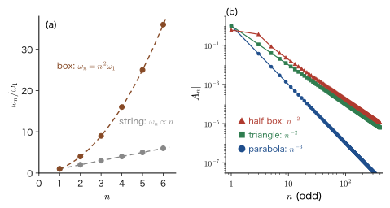
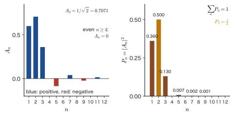
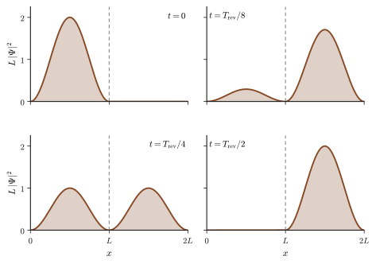
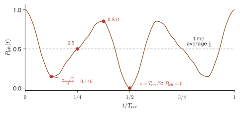
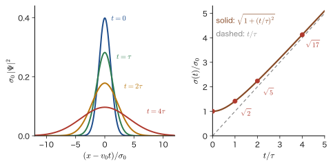

Chapter 49The Time-Dependent Schrödinger Equation — Superposition of Stationary States and Waves in a Box
Throughout Parts III–VIII so far, we have solved, almost without exception, the “time-independent Schrödinger equation” $\hat{H}\psi=E\psi$. The particle in a box, the harmonic oscillator, the hydrogen atom, helium, molecular orbitals, the bands of crystals, the splitting of the $d$ levels of transition-metal ions—each of these was a problem of finding the energy eigenvalues and eigenfunctions, that is, the stationary states. If we are concerned only with the ground state, the state of lowest energy, this is enough. That is because, unless something is done to it from outside, the ground state never changes, so there was no need to follow time.
Yet most of the situations in which a material “does its work” lie outside the ground state. Ruby is red because the $3d$ electrons of $\mathrm{Cr^{3+}}$ absorb light and rise to an excited state (Part VIII), and an LED glows because excited electrons fall to a lower level. A solar cell is a race to see whether the electrons and holes excited by light vanish before they can become a current, and in a catalytic reaction the change with time itself, in which bonds break and form, is the subject. Why must we follow the change with time when we deal with excited states? Section 49.1 states the answer as three reasons, and this chapter is the motivation for the whole of Part IX.
So let us solve the Schrödinger equation that contains time, $i\hbar\,\partial\Psi/\partial t=\hat{H}\Psi$, in the simplest case, without skipping a single line of the equations. The strategy closely resembles the superposition of the normal modes of a vibrating string (AD 03, “Introductory University Physics,” Chapter 17, Section 17.3). (1) First, by separation of variables, we find the stationary states $\psi_n(x)\,e^{-iE_nt/\hbar}$, in which only the phase rotates with time. (2) Nothing moves in a single stationary state, so we create the time dependence by superposing stationary states. The equation that determines the weights of the superposition is none other than the formula for the coefficients of a Fourier series. (3) As a concrete example, we solve for how the wave function moves when the width of the box suddenly expands from $L$ to $2L$, working through the integral for the expansion coefficients without skipping any manipulation of the equations, and then look at what lies beyond: full revival, the mirror image, and the quantum carpet. (4) With a Gaussian wave packet, we see that in free space, where there are no walls, the wave keeps spreading. In classical mechanics, the equation of motion of a point mass is second order in time, so two things had to be given: the initial position and the initial velocity. The Schrödinger equation is first order in time, so once we give the single initial wave function $\Psi(x,0)$, everything afterward is completely determined. We check this difference in this chapter as well.
Road map of this part. Part IX consists of the following seven chapters. In Part VIII, we found the splitting $\Delta_{\mathrm o}$ of the $d$ levels and, from the fact that its magnitude is close to the energy of visible light, explained the colors of ruby and emerald (Chapter 48). There we used, as a known fact, Bohr's frequency condition (Chapter 5) that “a photon with $h\nu=\Delta E$, equal to the energy difference $\Delta E$, is absorbed.” Part IX goes beyond that and answers the questions of how absorption and light emission occur in the language of quantum mechanics, how fast they occur, and why some transitions occur while others do not.
| Chapter | Title | One-line summary |
|---|---|---|
| Chapter 49 (this chapter) | The Time-Dependent Schrödinger Equation | Build the time dependence of the wave function from a superposition of stationary states. Revival of the wave in a box, and spreading in free space |
| Chapter 50 | The Time-Evolution Operator and the Three Pictures | Rewrite the time evolution in the language of operators with $e^{-i\hat{H}t/\hbar}$. The Schrödinger, Heisenberg, and interaction pictures |
| Chapter 51 | Time-Dependent Perturbation Theory and Fermi's Golden Rule | The probability of a transition caused by an external field such as light. Rabi oscillation. The adiabatic approximation |
| Chapter 52 | Absorption and Emission of Light | The electric dipole approximation, selection rules, Einstein coefficients, the lifetime of an excited state, and the linewidth of a spectrum |
| Chapter 53 | Stimulated Emission and Lasers, and the Optical Absorption Spectra of Materials | Population inversion and the laser. The absorption edge of semiconductors and the colors of complexes |
| Chapter 54 | Linear Response and an Introduction to the Kubo Formula | Response to an external field and causality, the Kramers–Kronig relations, and the complex permittivity |
| Chapter 55 | Propagators and an Introduction to Green's Functions | Gathering the time evolution into a single function. The local density of states and lifetimes |
The coefficients $A_n$ and the phase factors $e^{-iE_nt/\hbar}$ of the “superposition of stationary states” derived in this chapter are rewritten in Chapter 50 as the eigenexpansion of the time-evolution operator. In Chapter 51 they are generalized to the problem in which an external field makes the coefficients $A_n$ change with time, and in Chapter 55 to the propagator $\sum_n\psi_n(x)\psi_n^*(x')e^{-iE_n(t-t')/\hbar}$. The starting point of all of these is the equation $\Psi=\sum_nA_n\psi_n\,e^{-iE_nt/\hbar}$ of this chapter. Part IX is also the groundwork in time-dependent quantum mechanics for the companion volume “Linear Response Theory” (AD 08) (Contents).
- Be able to explain, in terms of three reasons (the operations that create an excited state, the lifetime of an excited state, and the time dependence of the functions of materials), why we must follow the change with time in order to treat excited states and transitions, even though we need not consider time when only the ground state is concerned
- Be able to derive $\Psi(x,t)=A\,\psi(x)\,e^{-iEt/\hbar}$ by separation of variables, and to prove that in a stationary state neither $\abs{\Psi}^2$ nor the expectation value of a physical quantity that does not depend explicitly on time moves
- Be able to use the superposition of stationary states $\Psi=\sum_nA_n\psi_n(x)e^{-iE_nt/\hbar}$, the expansion coefficients $A_n=\int\psi_n^*\Psi(x,0)\dd x$, the normalization $\sum_n\abs{A_n}^2=1$, the expectation value of the energy $\expval{E}=\sum_n\abs{A_n}^2E_n$, and the continuity equation $\partial\rho/\partial t+\partial j/\partial x=0$
- Be able to show that the time-dependent solution for a particle in a box is “a Fourier sine series at each instant,” and to derive the quantum beat $\expval{x}=\tfrac{L}{2}-\tfrac{16L}{9\pi^2}\cos\omega_{21}t$ of a superposition of two states
- Be able to solve through to the end the problem in which the width of the box suddenly expands from $L$ to $2L$, using the product-to-sum formulas and the case analysis of $\sin\frac{(n\mp2)\pi}{2}$, as far as the expansion coefficients $A_2=\tfrac{1}{\sqrt2}$ and $A_{2k-1}=\dfrac{4\sqrt2\,(-1)^k}{(2k+1)(2k-3)\pi}$
- Be able to explain the revival time $T_{\mathrm{rev}}=16mL^2/(\pi\hbar)$, the mirror image at half the period $\Psi(x,T_{\mathrm{rev}}/2)=-\Psi(2L-x,0)$, the quantum carpet, and the sudden approximation ($0.702$ for $\mathrm{{}^3H}\to\mathrm{{}^3He^+}$)
- Be able to derive the spreading $\sigma(t)=\sigma_0\sqrt{1+(\hbar t/2m\sigma_0^2)^2}$ of the Gaussian wave packet of a free particle, and to estimate its time scale $\tau=2m\sigma_0^2/\hbar$ for an electron, a proton, and everyday objects
- Earlier chapters of this book: the Born interpretation, expectation values, and the time–energy uncertainty (Chapter 8); the Schrödinger equation, conservation of probability, and Ehrenfest's theorem (Chapter 9; Ehrenfest's theorem is summarized in Section 9.4, so it is not repeated in this chapter); the particle in a box and Dirac notation (Chapter 10; Section 10.5 also contains a preview of the time-dependent discussion); and the Fourier-transform convention for the momentum representation (Chapter 2).
- Mathematics: separable first-order differential equations (University Mathematics, Chapter 33, Section 33.2), inner products of functions and orthogonal expansions (University Mathematics, Chapter 27, Section 27.2), Fourier sine series (University Mathematics, Chapter 28, Section 28.3), Euler's formula (University Mathematics, Chapter 21, Section 21.4), the product-to-sum formulas (High School Mathematics, Chapter 5, Section 5.5), and the Fourier transform of a Gaussian function (University Mathematics, Chapter 30, Section 30.4).
- Physics: wave packets and group velocity (Introductory University Physics, Chapter 17, Section 17.5).
- Relation to the companion volumes: In University Mathematics, Chapter 45, we derived the time-dependent solution of the infinite well from the mathematical side (Section 45.4). This chapter solves it again, carefully and from the beginning, as physics, and goes beyond it (a change in the width of the box, full revival, and the spreading of a wave packet).
49.1 Why Follow the Time Evolution? — Ground States and Excited States
49.1.1 Quantum mechanics so far has been a “still picture”
From Part III onward, the equation we have been solving is the time-independent Schrödinger equation:
\begin{equation} \hat{H}\psi(x)=E\,\psi(x),\qquad \hat{H}=-\frac{\hbar^2}{2m}\frac{\dd^2}{\dd x^2}+V(x) \label{eq:49-tise} \end{equation}The solution $\psi_n(x)$ is the spatial part of the wave function of a stationary state, and it is determined together with the energy eigenvalue $E_n$. In this chapter, as in the other chapters of this book, we keep the convention of numbering the states $n=0,1,2,\dots$ in general theory (the ground state is $n=0$) and $n=1,2,\dots$ for the particle in a box and the hydrogen atom (the ground state is $n=1$). For the particle in a box, the protagonist of this chapter, we have $n=1,2,3,\dots$.
The ground-state wave function with the time factor attached, $\Psi(x,t)=\psi_1(x)\,e^{-iE_1t/\hbar}$, only has its phase rotate; neither the probability density $\abs{\Psi}^2$ nor the expectation values ever change (we prove this in Section 49.1.4 below). Moreover, since the ground state has the lowest energy, it cannot emit energy and drop to a lower state either. The ground state of an isolated system stays as it is forever if it is left alone. If all we want is to find static properties that answer the question “what shape does the material have”—the lattice constant of a crystal, the length of a bond in a molecule, the band structure at absolute zero—there was no need to follow time. This is why quantum mechanics up to this point could get by with a “still picture.”
49.1.2 To treat excited states, we must follow time
Once we begin to treat excited states and transitions, however, we can no longer avoid time. There are three reasons.
Discussion: Three reasons why excited states require us to follow the change with time
(i) The operation of “creating” an excited state is a time-dependent operation. To create an excited state, we do something to the system from outside: we shine light on it, irradiate it with an electron beam, heat it, apply a voltage, and so on. These operations add a time-dependent term $\hat{H}_1(t)$ to the Hamiltonian. A system that was initially in the ground state passes, during the operation, through a state that is neither the ground state nor an excited state but a superposition state of the two (as we will see in Section 49.2 below, a state that is not an energy eigenstate, that is, not a stationary state), and the proportion $\abs{A_{\mathrm{ex}}(t)}^2$ of the excited state in this superposition increases with time. The content of the single phrase “we shone light and got an excited state” is this time dependence (Chapter 51).
(ii) An excited state does not last forever. The $2p$ state of the hydrogen atom is an eigenstate of the Hamiltonian $\hat{H}$ of the atom alone, and if we look at $\hat{H}$ alone it is a stationary state. However, a real atom is coupled to the electromagnetic field of the vacuum, and the $2p$ state emits a photon and drops to the $1s$ state in about $1.6\ \mathrm{ns}$ ($1.6\times10^{-9}\ \mathrm{s}$) (Chapter 52). The electromagnetic field of the vacuum is also a quantum-mechanical system, and even in a state with zero photons it has “fluctuations,” so an excited state emits a photon spontaneously. Treating this accurately requires the quantization of the electromagnetic field, which we study in Chapter 60. In Chapter 52, we investigate it by a semiclassical method that treats the electromagnetic field as a classical wave. From the standpoint of the total Hamiltonian of the atom plus the electromagnetic field, the “atom in the $2p$ state” is not an exact eigenstate, and it has a lifetime. The ground state, on the other hand, has nowhere to fall to, so its lifetime is infinite. Lifetime is a property peculiar to excited states, and computing it requires following the time evolution.
(iii) Many of the functions of materials are time-dependent phenomena. Absorption and light emission (the color of ruby, LEDs, lasers), relaxation in which excitation energy turns into heat, electrical conduction in which electrons flow through a crystal, chemical reactions and catalysis, the charging and discharging of batteries—all of these are phenomena in which “something changes with time,” and what we want to know is not a static energy but a speed, a lifetime, and the magnitude of a response.
The relation between the lifetime in (ii) and the energy involves the time–energy uncertainty $\Delta E\,\Delta t\gtrsim\hbar/2$ that we studied in Chapter 8, Section 8.8. The energy of a state with lifetime $\tau_{\mathrm{life}}$ has an uncertainty of about $\Delta E\approx\hbar/\tau_{\mathrm{life}}$. In the next example, let us estimate its size.
Example 49.1: The energy width of the hydrogen $2p$ state
Suppose the lifetime of the $2p$ state of the hydrogen atom is $\tau_{\mathrm{life}}=1.6\ \mathrm{ns}$. (1) Find the energy uncertainty $\Delta E\approx\hbar/\tau_{\mathrm{life}}$ in $\mathrm{eV}$. (2) Find its ratio to the energy difference $E_2-E_1=10.2\ \mathrm{eV}$ between $2p$ and $1s$.
Solution. (1) Since $\hbar=1.054\,572\times10^{-34}\ \mathrm{J\,s}$, we have $\Delta E\approx\dfrac{\hbar}{\tau_{\mathrm{life}}}=\dfrac{1.0546\times10^{-34}\ \mathrm{J\,s}}{1.6\times10^{-9}\ \mathrm{s}}=6.59\times10^{-26}\ \mathrm{J}$. Dividing by $1\ \mathrm{eV}=1.602\,177\times10^{-19}\ \mathrm{J}$, we get $\Delta E\approx4.1\times10^{-7}\ \mathrm{eV}$.
(2) $\dfrac{\Delta E}{E_2-E_1}=\dfrac{4.1\times10^{-7}}{10.2}=4.0\times10^{-8}$. The energy width is only about 4 parts in 100 million of the level spacing. Therefore, it remains perfectly valid to regard the $2p$ state as “a state of energy $-3.40\ \mathrm{eV}$,” and the approach of Part III onward, in which we regard states as nearly stationary and find the levels, is correct. However, this tiny width is actually observed as the natural linewidth of a spectral line (Chapter 52).
Caution: “Excited state” and “non-stationary state” are different terms
“Excited state” refers to an eigenstate whose energy is higher than that of the ground state (example: the $n=2$ state of the particle in a box). By itself, it is a stationary state, $\Psi=\psi_2(x)e^{-iE_2t/\hbar}$, and $\abs{\Psi}^2$ does not move. What moves is a state in which two or more eigenstates of different energies are mixed, that is, a “non-stationary state.” Exciting by shining light is the operation of “mixing” an excited state into the ground state, and it is the state after the mixing that moves. That an exact eigenstate does not move and that an excited state has a lifetime are not contradictory. As stated in (ii), the latter is because an eigenstate of “the atom alone” is not an eigenstate of the whole system, “atom plus light.”
Application: Measuring time — luminescence lifetime and femtosecond spectroscopy
The luminescence lifetime of phosphors and laser crystals (the average time from excitation until the material emits light and returns to the ground state) varies greatly from material to material, from ns to ms. For example, the lifetime of the red light emission of ruby ($\mathrm{Al_2O_3}$ containing $\mathrm{Cr^{3+}}$) is a few ms, a value about six orders of magnitude longer than the lifetime of the $2p$ state of an atom (about $1.6\ \mathrm{ns}$). This long lifetime is one of the reasons why ruby can be used as a laser material (Chapter 53). The carrier lifetime of a semiconductor (the time until excited electrons and holes recombine and disappear) determines the efficiency of light-emitting diodes and solar cells. In photocatalysis, light-excited electrons and holes recombine before they can be used in surface reactions, so it becomes a competition between the lifetime and the reaction rate. Chemical reactions and the relaxation of electrons in solids are faster still, often proceeding in tens to hundreds of fs ($1\ \mathrm{fs}=10^{-15}\ \mathrm{s}$). To see this, pump–probe spectroscopy is used, in which the sample is excited with a femtosecond laser pulse and its state is examined with another pulse that arrives later. The result derived in this chapter, “the period for an electron to oscillate in a box of $1\ \mathrm{nm}$ is a few fs” (Section 49.3), gives a guide to this time scale.
49.1.3 The time-dependent Schrödinger equation and the “determinism” of the wave function
The equation for following time is the time-dependent Schrödinger equation. As derived in Chapter 9, in one dimension with $V=V(x)$,
\begin{equation} i\hbar\,\frac{\partial\Psi(x,t)}{\partial t}=\hat{H}\,\Psi(x,t)=-\frac{\hbar^2}{2m}\frac{\partial^2\Psi}{\partial x^2}+V(x)\,\Psi \label{eq:49-tdse} \end{equation}holds. The $i\hbar$ on the left-hand side is the same as $-\dfrac{\hbar}{i}$ (since $\dfrac1i=-i$, we have $-\dfrac{\hbar}{i}=i\hbar$). In Chapter 9 and in AD 02, Chapter 45, we wrote it in the form $-\hbar/i$, but in this chapter we write it in the form $i\hbar$. What matters here is that this equation is first order in time $t$. Newton's equation of motion $m\ddot{x}=F$ is second order in time, and two quantities, the initial position $x(0)$ and the initial velocity $\dot{x}(0)$, were required to determine the future; in contrast, in Eq. \eqref{eq:49-tdse}, once the wave function $\Psi(x,0)$ at a single instant is given, $\Psi(x,t)$ at all later times is uniquely determined. The time dependence of the wave function is completely deterministic. Probability enters only when we make a measurement to examine the position of the particle and so on (the Born interpretation, Chapter 8).
49.1.4 Stationary states and non-stationary states — a proof that a stationary state does not move
Definition 49.1: Stationary state
The state obtained by attaching the time factor to a single eigenstate $\psi_E(x)$ ($\hat{H}\psi_E=E\psi_E$) of the Hamiltonian $\hat{H}$ (time-independent),
\begin{equation} \Psi(x,t)=\psi_E(x)\,e^{-iE t/\hbar} \label{eq:49-stat} \end{equation}is called a stationary state. As we will see in the next section, this is a solution of the time-dependent equation \eqref{eq:49-tdse}. Note also that $\abs{e^{-iEt/\hbar}}=1$ (by Euler's formula $e^{i\theta}=\cos\theta+i\sin\theta$, $\abs{e^{i\theta}}^2=\cos^2\theta+\sin^2\theta=1$).
Theorem 49.1: Stationary states do not move
In the stationary state \eqref{eq:49-stat}, neither the probability density $\abs{\Psi(x,t)}^2$ nor the expectation value of an operator $\hat{A}$ that does not depend explicitly on time (position $\hat{x}$, momentum $\hat{p}=-i\hbar\,\partial/\partial x$, energy $\hat{H}$, and so on), $\expval{A}=\displaystyle\int\Psi^*\hat{A}\Psi\dd x$, depends on time.
Proof
The probability density is $\abs{\Psi}^2=\Psi^*\Psi=\psi_E^*e^{+iEt/\hbar}\,\psi_Ee^{-iEt/\hbar}=\abs{\psi_E(x)}^2$. Along the way, we used that, since $E$ is real (an eigenvalue of the energy), $\left(e^{-iEt/\hbar}\right)^*=e^{+iEt/\hbar}$, and that $e^{iEt/\hbar}e^{-iEt/\hbar}=e^0=1$.
As for the expectation value, since $\hat{A}$ contains only $x$ and $\partial/\partial x$ and does not depend explicitly on $t$, the function of $t$ only, $e^{-iEt/\hbar}$, can be taken outside $\hat{A}$: $\hat{A}\bigl(\psi_Ee^{-iEt/\hbar}\bigr)=e^{-iEt/\hbar}\hat{A}\psi_E$. Therefore
$$ \expval{A}(t)=\int\psi_E^*\,e^{+iEt/\hbar}\;e^{-iEt/\hbar}\,\hat{A}\psi_E\dd x=\int\psi_E^*\,\hat{A}\,\psi_E\dd x $$and $t$ disappears. The phase factor $e^{+iEt/\hbar}$ comes from $\Psi^*$ and $e^{-iEt/\hbar}$ comes from $\Psi$, so when they are multiplied together they cancel each other.
∎
The converse of Theorem 49.1 is also important, so we state the conclusion in advance (the proof is in Section 49.2). In a state in which two or more eigenstates of different energies are mixed (a non-stationary state), the probability density changes with time. That is, we can decide as follows.
- Only one energy eigenstate (or a superposition of only degenerate states that have the same energy) → a stationary state. It does not move.
- A superposition of eigenstates with different energies → a non-stationary state. The probability density oscillates at an angular frequency of (energy difference) $/\hbar$.
Example 49.2: The $n=3$ stationary state of a particle in a box does not move
For the $n=3$ state $\Psi_3(x,t)=\sqrt{\dfrac{2}{L}}\sin\dfrac{3\pi x}{L}\,e^{-iE_3t/\hbar}$ of a box of width $L$ ($0\le x\le L$), find $\expval{x}$, $\expval{p}$, and $\expval{x^2}$, and confirm that they are independent of time.
Solution. We compute for the general $n$th state. Since $\psi_n=\sqrt{2/L}\sin\dfrac{n\pi x}{L}$ is real, the phase factors cancel as in the proof of Theorem 49.1, and we have $\expval{A}=\displaystyle\int_0^L\psi_n\,\hat{A}\,\psi_n\dd x$.
$\expval{x}$. $\abs{\psi_n}^2$ is symmetric about $x=L/2$ ($\psi_n(L-x)^2=\psi_n(x)^2$). Substituting $u=L-x$, we get $\displaystyle\int_0^Lx\,\psi_n^2\dd x=\int_0^L(L-u)\,\psi_n(u)^2\dd u=L-\int_0^Lu\,\psi_n(u)^2\dd u$ (we used the normalization $\int\psi_n^2=1$). Letting the left-hand side be $I$, we have $I=L-I$, so $\expval{x}=I=\dfrac{L}{2}$.
$\expval{p}$. Since $\hat{p}\psi_n=-i\hbar\,\psi_n'$, we have $\expval{p}=-i\hbar\displaystyle\int_0^L\psi_n\psi_n'\dd x=-\dfrac{i\hbar}{2}\Bigl[\psi_n^2\Bigr]_0^L=0$ ($\psi\psi'=\frac12(\psi^2)'$, and $\psi_n(0)=\psi_n(L)=0$).
$\expval{x^2}$. With $\sin^2\theta=\dfrac{1-\cos2\theta}{2}$ and $\theta=\dfrac{n\pi x}{L}$, we get $\displaystyle\expval{x^2}=\frac{2}{L}\int_0^Lx^2\sin^2\frac{n\pi x}{L}\dd x=\frac{1}{L}\int_0^Lx^2\dd x-\frac{1}{L}\int_0^Lx^2\cos\frac{2n\pi x}{L}\dd x$. The first term is $\dfrac{L^2}{3}$. For the second term, with $q=\dfrac{2n\pi}{L}$, we integrate by parts twice: $\displaystyle\int_0^Lx^2\cos qx\dd x=\Bigl[\frac{x^2\sin qx}{q}\Bigr]_0^L-\frac{2}{q}\int_0^Lx\sin qx\dd x$. Since $\sin qL=\sin2n\pi=0$, the first term is $0$. What remains is $\displaystyle\int_0^Lx\sin qx\dd x=\Bigl[-\frac{x\cos qx}{q}\Bigr]_0^L+\frac{1}{q}\int_0^L\cos qx\dd x=-\frac{L}{q}+0$ ($\cos qL=1$, and $\int_0^L\cos qx\dd x=\sin qL/q=0$). Hence $\displaystyle\int_0^Lx^2\cos qx\dd x=-\frac{2}{q}\Bigl(-\frac{L}{q}\Bigr)=\frac{2L}{q^2}=\frac{2L^3}{4n^2\pi^2}$, and we obtain
$$ \expval{x^2}=\frac{L^2}{3}-\frac{1}{L}\cdot\frac{L^3}{2n^2\pi^2}=L^2\left(\frac{1}{3}-\frac{1}{2n^2\pi^2}\right) $$For $n=3$, $\expval{x^2}=L^2\Bigl(\dfrac13-\dfrac{1}{18\pi^2}\Bigr)=0.3277\,L^2$. The above results, $\expval{x}=L/2$, $\expval{p}=0$, and $\expval{x^2}=0.3277L^2$, contain no $t$ anywhere. We have confirmed concretely that expectation values in a stationary state are independent of time.
49.2 Separation of Variables, Stationary States, and Superposition
49.2.1 Separation of variables — splitting into a time part and a space part
We solve the time-dependent Schrödinger equation \eqref{eq:49-tdse} for the case $V=V(x)$ (that is, $V$ is independent of time). First, let us look for a special case in which the wave function is the product of a function $\psi(x)$ of $x$ only and a function $T(t)$ of $t$ only. This is called separation of variables (the same procedure was also shown in Chapter 9, Section 9.5.1):
\begin{equation} \Psi(x,t)=\psi(x)\,T(t) \label{eq:49-sep} \end{equation}Rewriting Eq. \eqref{eq:49-tdse} in terms of $-\dfrac{\hbar}{i}$, using $-\hbar/i=i\hbar$, we obtain
\begin{equation} -\frac{\hbar^2}{2m}\frac{\partial^2\Psi}{\partial x^2}+V(x)\Psi=-\frac{\hbar}{i}\frac{\partial\Psi}{\partial t} \label{eq:49-tdse2} \end{equation}(In this form the left-hand side, which acts only on $x$, and the right-hand side, which acts only on $t$, are neatly separated. In three dimensions we need only read $\dfrac{\partial^2}{\partial x^2}$ as $\nabla^2$.) We substitute Eq. \eqref{eq:49-sep}. Since $\dfrac{\partial^2\Psi}{\partial x^2}=\psi''(x)\,T(t)$ ($T$ behaves like a constant independent of $x$) and $\dfrac{\partial\Psi}{\partial t}=\psi(x)\,\dot{T}(t)$ ($\dot{T}=\dd T/\dd t$), we obtain
$$ -\frac{\hbar^2}{2m}\psi''\,T+V\psi\,T=-\frac{\hbar}{i}\,\psi\,\dot{T} $$Dividing both sides by $\psi(x)\,T(t)$ gives
\begin{equation} \frac{1}{\psi(x)}\left[-\frac{\hbar^2}{2m}\psi''(x)+V(x)\psi(x)\right]=-\frac{\hbar}{i}\,\frac{\dot{T}(t)}{T(t)} \label{eq:49-sep2} \end{equation}The left-hand side is a function of $x$ only, and the right-hand side is a function of $t$ only. Since $x$ and $t$ are independent variables, the right-hand side does not change even if, for example, we move $x$ while holding $t$ fixed. For the equality to hold nevertheless, the left-hand side must also be a constant independent of $x$, and for the same reason the right-hand side is a constant independent of $t$. That is, both sides are equal to the same constant. Since the left-hand side is $\hat{H}\psi/\psi$, this constant has the dimension of energy. We denote it by $E$ (the separation constant). In this way, Eq. \eqref{eq:49-sep2} splits into the following two equations:
\begin{equation} \begin{cases} -\dfrac{\hbar^2}{2m}\psi''+V(x)\,\psi=E\,\psi & (x\ \text{part})\\[3mm] -\dfrac{\hbar}{i}\,\dfrac{\dd T}{\dd t}=E\,T & (t\ \text{part}) \end{cases} \label{eq:49-sepeqs} \end{equation}The first equation is exactly the time-independent Schrödinger equation $\hat{H}\psi=E\psi$, which we solved many times in Part III. That is, the separation constant $E$ is an eigenvalue of the energy.
Why is the separation constant $E$ real?
Suppose $E=E_{\mathrm R}+iE_{\mathrm I}$ ($E_{\mathrm R},E_{\mathrm I}$ real). Then the solution we find next would be $T(t)\propto e^{-iEt/\hbar}=e^{-iE_{\mathrm R}t/\hbar}\,e^{E_{\mathrm I}t/\hbar}$, and $\abs{T}^2\propto e^{2E_{\mathrm I}t/\hbar}$ would either increase or decrease with time. Then $\displaystyle\int\abs{\Psi}^2\dd x=\abs{T}^2\int\abs{\psi}^2\dd x$ would change with $t$, which contradicts the normalization, “the probability that the particle is certainly somewhere in all space is $1$.” We show in Section 49.2.5 that when $V$ is real, the total probability is independent of time. Therefore $E_{\mathrm I}=0$; that is, $E$ is real.
The second equation is a first-order differential equation in $t$ only, and can be solved immediately. Since $-\dfrac{\hbar}{i}=i\hbar$, we have $i\hbar\dot{T}=ET$, that is, $\dot{T}=-\dfrac{iE}{\hbar}T$ ($\dfrac1i=-i$). Treating this as a separable equation (University Mathematics, Chapter 33, Section 33.2), we write $\dfrac{\dd T}{T}=-\dfrac{iE}{\hbar}\dd t$ and integrate both sides to obtain $\ln T=-\dfrac{iE}{\hbar}t+(\text{constant})$, that is, $T(t)=T(0)\,e^{-iEt/\hbar}$. Differentiating indeed gives $\dot{T}=-\dfrac{iE}{\hbar}T$. If we absorb the constant $T(0)$ into $\psi(x)$ as a constant multiple and call the resulting constant $A$, the solution of Eq. \eqref{eq:49-sep} is
\begin{equation} \Psi(x,t)=A\,\psi(x)\,e^{-iEt/\hbar} \label{eq:49-sol1} \end{equation}The time factor $e^{-iEt/\hbar}=e^{-i\omega t}$ is a phase that rotates at the angular frequency $\omega=E/\hbar$ (the Planck–Einstein relation $E=\hbar\omega$, Chapter 4). This has the same form as the time part of the plane wave $e^{i(kx-\omega t)}$. Moreover, since $\abs{e^{-iEt/\hbar}}=1$, the probability density $\abs{\Psi}^2=\abs{A}^2\abs{\psi}^2$ is independent of time, as in the previous section (Theorem 49.1).
Caution: Separation of variables is a means of producing a “family of solutions,” not the general solution
Equation \eqref{eq:49-sol1} is a special solution that can be separated. A general wave function cannot be written in the form $\psi(x)T(t)$ (the superposition in Section 49.2.2, which follows, is not of product form). You may wonder why we are allowed to split it into a product of $x$ and $t$, but the reason the separation is justified is that “if we make many separated solutions, a general solution can be expressed as their superposition.” That is, separation is a means of obtaining the building blocks (stationary states) from which the general solution is assembled.
49.2.2 A single solution cannot explain phenomena — superposition
The state of Eq. \eqref{eq:49-sol1} is a stationary state (Definition 49.1), and by Theorem 49.1 neither the probability density nor the expectation values move. Therefore most phenomena—the emission of light, the motion of electrons, chemical reactions, and other phenomena in which something changes—cannot be explained by this one solution. So we superpose several stationary states (in Chapter 9, Section 9.5.3, we already stated that time dependence is produced by superposition).
Discussion: Why is a superposition still a solution of the equation?
The Schrödinger equation \eqref{eq:49-tdse} is linear in $\Psi$. That is, if $\Psi_1$ and $\Psi_2$ are solutions and $c_1,c_2$ are constants, then $c_1\Psi_1+c_2\Psi_2$ is also a solution. Indeed, since both $i\hbar\dfrac{\partial}{\partial t}$ and $\hat{H}$ are linear operators,
$$ i\hbar\frac{\partial}{\partial t}\bigl(c_1\Psi_1+c_2\Psi_2\bigr)=c_1\,i\hbar\frac{\partial\Psi_1}{\partial t}+c_2\,i\hbar\frac{\partial\Psi_2}{\partial t}=c_1\hat{H}\Psi_1+c_2\hat{H}\Psi_2=\hat{H}\bigl(c_1\Psi_1+c_2\Psi_2\bigr) $$holds. This is the principle of superposition. Each stationary state $\psi_n(x)\,e^{-iE_nt/\hbar}$ belonging to the energy eigenvalue $E_n$ is a solution, so the sum of them,
\begin{equation} \Psi(x,t)=\sum_{n}A_n\,\psi_n(x)\,e^{-iE_nt/\hbar} \label{eq:49-super} \end{equation}is also a solution. Here $A_n$ is a complex constant, and for a particle in a box we sum over $n=1,2,3,\dots$. This Eq. \eqref{eq:49-super} is the general solution of the time-dependent Schrödinger equation (for an arbitrary initial state). As for why a general initial state can be expressed in this form (namely, the fact that $\{\psi_n\}$ forms a complete set), we define completeness in the Math Tool box of Section 49.2.3, which follows, and for the case of a box we will see it as a Fourier series in Section 49.3.2.
Math Tool: Superposition for linear differential equations, and expansion in an orthogonal set of functions
The fact that the set of all solutions of a linear homogeneous differential equation is “closed under addition and constant multiples” (forms a vector space) is also the basis for the statement that the general solution of a second-order linear differential equation is “a linear combination of two independent solutions” (University Mathematics, Chapter 35, Section 35.4). When the solutions $\{\psi_n\}$ are mutually orthogonal, the method of expanding an arbitrary function $f$ as $f=\sum_nA_n\psi_n$ and extracting the coefficients through the inner product $A_n=\int\psi_n^*f\dd x$ is precisely the Fourier series (University Mathematics, Chapter 27, Section 27.1, Section 27.2).
49.2.3 Determining the expansion coefficients $A_n$, normalization, and the expectation value of the energy
The coefficients $A_n$ in Eq. \eqref{eq:49-super} are determined by the initial state $\Psi(x,0)$. Setting $t=0$ gives $e^{-iE_n\cdot0/\hbar}=1$, so
$$ \Psi(x,0)=\sum_nA_n\,\psi_n(x) $$This is the equation that expands the function $\Psi(x,0)$ in terms of $\{\psi_n\}$. Using the fact that the eigenfunctions are orthonormal ($\int\psi_m^*\psi_n\dd x=\delta_{mn}$), we can extract $A_n$.
Derivation: $A_n$, normalization, and $\expval{E}$
[i] Coefficients. Multiply both sides of $\Psi(x,0)=\sum_nA_n\psi_n(x)$ by $\psi_m^*(x)$ from the left, and integrate over all space (over $0\le x\le L$ for a box):
$$ \int\psi_m^*\,\Psi(x,0)\dd x=\sum_nA_n\int\psi_m^*\psi_n\dd x=\sum_nA_n\,\delta_{mn}=A_m $$(The Kronecker delta $\delta_{mn}$ is $1$ only when $m=n$, so in the sum only the term with $n=m$ survives.) Renaming the symbol $m$ back to $n$, we obtain the following equation (the Dirac notation $\braket{\psi_n}{\Psi(0)}$ is the way of writing the inner product introduced in Chapter 10, Section 10.2):
\begin{equation} A_n=\int\psi_n^*(x)\,\Psi(x,0)\dd x=\braket{\psi_n}{\Psi(0)} \label{eq:49-An} \end{equation}This is the same structure as the way the components of a vector $\bm{v}=\sum_iv_i\bm{e}_i$ are extracted by $v_i=\bm{e}_i\cdot\bm{v}$.
[ii] Normalization and time invariance. Integrating $\abs{\Psi}^2$ at time $t$, we have
$$ \int\abs{\Psi(x,t)}^2\dd x=\sum_{m,n}A_m^*A_n\,e^{i(E_m-E_n)t/\hbar}\int\psi_m^*\psi_n\dd x=\sum_{m,n}A_m^*A_n\,e^{i(E_m-E_n)t/\hbar}\,\delta_{mn}=\sum_n\abs{A_n}^2 $$(We expanded the product of $\psi_m^*e^{+iE_mt/\hbar}$ from $\Psi^*$ and $\psi_ne^{-iE_nt/\hbar}$ from $\Psi$. The terms with $m\ne n$ vanish by orthogonality, and in the terms with $m=n$ the phases cancel and $t$ drops out.) The normalization condition $\int\abs{\Psi}^2\dd x=1$, which says that the probability of finding the particle somewhere is $1$, is therefore equivalent to
\begin{equation} \sum_n\abs{A_n}^2=1 \label{eq:49-norm} \end{equation}and, moreover, this sum is independent of time (Parseval's identity).
[iii] Expectation value of the energy. Using $\hat{H}\psi_n=E_n\psi_n$, we have $\hat{H}\Psi=\sum_nA_nE_n\psi_ne^{-iE_nt/\hbar}$, so
$$ \expval{E}=\int\Psi^*\hat{H}\Psi\dd x=\sum_{m,n}A_m^*A_nE_n\,e^{i(E_m-E_n)t/\hbar}\int\psi_m^*\psi_n\dd x=\sum_n\abs{A_n}^2E_n $$That is the result.
∎
Math Tool: What a complete set is — any function can be expanded
$\{\psi_n\}$ is a complete set if any function $f$ (square-integrable on the interval) can be expanded as $f=\sum_nc_n\psi_n$. For the eigenfunctions $\sin(n\pi x/L)$ of the box, this corresponds to the convergence of the Fourier sine series (University Mathematics, Chapter 28, Section 28.3, Chapter 29, Section 29.3). If the set is complete, the same calculation as [ii] above gives $\int\abs{f}^2\dd x=\sum_n\abs{c_n}^2$ (Parseval's identity). This is the basis of $\sum_n\abs{A_n}^2=1$. The eigenfunctions of systems in which $\hat{H}$ is a Hermitian operator, such as the bound states of the harmonic oscillator and the hydrogen atom, also form a complete set (in this book we accept this fact and use it without proof).
Theorem 49.2: Time evolution by a superposition of stationary states
Suppose a time-independent Hamiltonian $\hat{H}$ has orthonormal eigenfunctions $\{\psi_n\}$ (with eigenvalues $E_n$), and the initial state is $\Psi(x,0)$. Then the wave function at time $t$ is given by
\begin{equation} \Psi(x,t)=\sum_nA_n\,\psi_n(x)\,e^{-iE_nt/\hbar},\qquad A_n=\int\psi_n^*(x)\Psi(x,0)\dd x \label{eq:49-thm} \end{equation}If $\Psi$ is normalized, then $\sum_n\abs{A_n}^2=1$, and $P_n=\abs{A_n}^2$ is the probability of obtaining $E_n$ when the energy is measured (the Born interpretation applied to energy eigenstates), and it is independent of time. The expectation value of the energy is $\expval{E}=\sum_nP_nE_n$, which is also independent of time.
Let us now put the content of Eq. \eqref{eq:49-thm} into words. As time passes, the magnitude $\abs{A_n}$ of each component (the probability of obtaining $E_n$ when the energy is measured) does not change. The only thing that changes is the phase $e^{-iE_nt/\hbar}$ of each component. Since the speed $E_n/\hbar$ at which the phase rotates differs from component to component, the phase relation among the components drifts with time, and this produces the change in the shape of $\abs{\Psi}^2$. If there are two or more components with different energies, the probability density is
$$ \abs{\Psi(x,t)}^2=\sum_{m,n}A_m^*A_n\,\psi_m^*(x)\psi_n(x)\,e^{i(E_m-E_n)t/\hbar} $$and its terms with $m\ne n$ (the interference terms) oscillate at the angular frequency $(E_m-E_n)/\hbar$, so the probability density changes with time. This is the proof of the criterion in Section 49.1 (a superposition of eigenstates with different energies is a non-stationary state). This angular frequency $(E_m-E_n)/\hbar$ is the quantum-mechanical origin of Bohr's frequency condition $h\nu=E_m-E_n$.
Example 49.3: Superposition coefficients, probabilities, energy, and relative phase
The initial state of a particle in a box is $\Psi(x,0)=\dfrac{1}{5}\bigl[\,3\,\psi_1(x)+4i\,\psi_2(x)\bigr]$ ($\psi_n$ are normalized eigenfunctions). (1) Check the normalization, and find the probabilities that the measured value of the energy is $E_1$ and $E_2$. (2) Express $\expval{E}$ in terms of $E_1$. (3) Find $\abs{\Psi(x,t)}^2$, and describe the effect of the factor $i$ (the relative phase) in $4i$.
Solution. (1) We have $A_1=\dfrac{3}{5}$ and $A_2=\dfrac{4i}{5}$, and $\abs{A_1}^2+\abs{A_2}^2=\dfrac{9}{25}+\dfrac{16}{25}=1$. The state is normalized. The probabilities are $P_1=\dfrac{9}{25}=0.36$ and $P_2=\dfrac{16}{25}=0.64$.
(2) Since $E_n=n^2E_1$, $\expval{E}=P_1E_1+P_2E_2=\dfrac{9}{25}E_1+\dfrac{16}{25}\cdot4E_1=\dfrac{9+64}{25}E_1=\dfrac{73}{25}E_1=2.92\,E_1$.
(3) We have $\Psi(x,t)=\dfrac{1}{5}\bigl[3\psi_1e^{-i\omega_1t}+4i\psi_2e^{-i\omega_2t}\bigr]$ ($\omega_n=E_n/\hbar$). Since $\psi_n$ is real, using $\abs{a+b}^2=\abs{a}^2+\abs{b}^2+2\Real(a^*b)$ we obtain
$$ \abs{\Psi}^2=\frac{9}{25}\psi_1^2+\frac{16}{25}\psi_2^2+2\Real\Bigl[\frac{3}{5}\cdot\frac{4i}{5}\,\psi_1\psi_2\,e^{i\omega_1t}e^{-i\omega_2t}\Bigr] $$Here $e^{i\omega_1t}e^{-i\omega_2t}=e^{-i\omega_{21}t}$ ($\omega_{21}=\omega_2-\omega_1$) and $ie^{-i\omega_{21}t}=i\cos\omega_{21}t+\sin\omega_{21}t$ give $\Real\bigl[ie^{-i\omega_{21}t}\bigr]=\sin\omega_{21}t$. Hence
$$ \abs{\Psi}^2=\frac{9}{25}\psi_1^2+\frac{16}{25}\psi_2^2+\frac{24}{25}\,\psi_1\psi_2\sin\omega_{21}t $$The interference term starts from $0$ ($\sin0=0$) at $t=0$ and oscillates as $\sin$. If the coefficient were $4$ (a real number) instead of $4i$, the interference term would be $\cos\omega_{21}t$ and would start from its maximum at $t=0$. In other words, the relative phase of the two components determines the “phase” of the oscillation of the probability density (when the peak shifts to the left). The overall phase $e^{i\alpha}$ ($\Psi\to e^{i\alpha}\Psi$) is an unobservable quantity that appears neither in $\abs{\Psi}^2$ nor in expectation values, whereas the relative phase between the components does show up in observations.
49.2.4 Rotation of the phase factor — viewed in the complex plane
Viewing the phase factor as an arrow in the complex plane makes the picture clear. $e^{-iEt/\hbar}$ represents an arrow of length $1$ that rotates clockwise with time at the constant angular velocity $E/\hbar$. In a stationary state, the wave function is just a set of arrows, each of a magnitude fixed for its $x$, all rotating together at the same angular velocity, so $\abs{\Psi}^2$ (the square of the arrow's length) does not change. However, when we add two arrows with different angular velocities, the angle between the two arrows changes with time, and the length of the resultant arrow pulsates between $a+b$ (same direction) and $\abs{a-b}$ (opposite direction) (Figure 49.1).
49.2.5 Conservation of probability and the continuity equation
Let us verify one more important consequence of the equation that contains time. If particles are neither created nor destroyed on their own, the change of the probability density $\rho(x,t)=\abs{\Psi(x,t)}^2$ should be explainable in terms of a “flow” of probability. When the potential $V(x)$ is real, the following theorem holds (we derived it in three dimensions in Chapter 9, Section 9.3; here we review the manipulations in one-dimensional form. In Chapter 9 the current density was written $J$, but in this chapter we write $j$. They are the same quantity).
Theorem 49.3: Continuity equation
When $V(x)$ is real, for a solution $\Psi(x,t)$ of Eq. \eqref{eq:49-tdse}, the probability density $\rho=\abs{\Psi}^2$ and the probability current density
\begin{equation} j(x,t)=\frac{\hbar}{m}\,\Imag\!\left(\Psi^*\frac{\partial\Psi}{\partial x}\right) \label{eq:49-j} \end{equation}satisfy the following continuity equation.
\begin{equation} \frac{\partial\rho}{\partial t}+\frac{\partial j}{\partial x}=0 \label{eq:49-cont} \end{equation}Proof
By the product rule, $\dfrac{\partial\rho}{\partial t}=\dfrac{\partial\Psi^*}{\partial t}\Psi+\Psi^*\dfrac{\partial\Psi}{\partial t}$. Dividing Eq. \eqref{eq:49-tdse} by $i\hbar$ (note that $\dfrac{1}{i\hbar}=-\dfrac{i}{\hbar}$), we obtain
$$ \frac{\partial\Psi}{\partial t}=\frac{i\hbar}{2m}\frac{\partial^2\Psi}{\partial x^2}-\frac{i}{\hbar}V\Psi $$Taking the complex conjugate of this ($\hbar,m,V$ are real) gives $\dfrac{\partial\Psi^*}{\partial t}=-\dfrac{i\hbar}{2m}\dfrac{\partial^2\Psi^*}{\partial x^2}+\dfrac{i}{\hbar}V\Psi^*$. Substituting these, we obtain
$$ \frac{\partial\rho}{\partial t}=\left[-\frac{i\hbar}{2m}\Psi^{*\prime\prime}+\frac{i}{\hbar}V\Psi^*\right]\Psi+\Psi^*\left[\frac{i\hbar}{2m}\Psi''-\frac{i}{\hbar}V\Psi\right]=\frac{i\hbar}{2m}\bigl(\Psi^*\Psi''-\Psi^{*\prime\prime}\Psi\bigr) $$($'$ denotes differentiation with respect to $x$. The terms containing $V$ are $\pm\frac{i}{\hbar}V\Psi^*\Psi$, which cancel each other because $V$ is real). Now we use $\dfrac{\partial}{\partial x}\bigl(\Psi^*\Psi'-\Psi^{*\prime}\Psi\bigr)=\Psi^{*\prime}\Psi'+\Psi^*\Psi''-\Psi^{*\prime\prime}\Psi-\Psi^{*\prime}\Psi'=\Psi^*\Psi''-\Psi^{*\prime\prime}\Psi$, which gives
$$ \frac{\partial\rho}{\partial t}=\frac{i\hbar}{2m}\frac{\partial}{\partial x}\bigl(\Psi^*\Psi'-\Psi^{*\prime}\Psi\bigr) $$Letting $z=\Psi^*\Psi'$, we have $\Psi^{*\prime}\Psi=z^*$ and $z-z^*=2i\,\Imag z$, so
$$ \frac{\partial\rho}{\partial t}=\frac{i\hbar}{2m}\cdot2i\,\frac{\partial}{\partial x}\Imag\bigl(\Psi^*\Psi'\bigr)=-\frac{\partial}{\partial x}\left[\frac{\hbar}{m}\Imag\bigl(\Psi^*\Psi'\bigr)\right]=-\frac{\partial j}{\partial x} $$∎
From this result we can draw the following conclusions. (a) If $\Psi$ becomes $0$ as $x\to\pm\infty$ (or at the walls of the box), then $j\to0$ and the total probability satisfies $\dfrac{\dd}{\dd t}\displaystyle\int\rho\dd x=-\bigl[j\bigr]_{-\infty}^{\infty}=0$; that is, $\int\abs{\Psi}^2\dd x$ does not depend on time. This is a consequence of $\hat{H}$ being a Hermitian operator (an operator that satisfies $\int\phi^*\hat{H}\psi\dd x=\int(\hat{H}\phi)^*\psi\dd x$), and it leads to the unitarity of the time-evolution operator (the property that it is a transformation preserving the inner product), which we treat in the next chapter (Chapter 50). (b) For a stationary state $\Psi=\psi(x)e^{-iEt/\hbar}$ in which $\psi$ is a real function (as for a particle in a box, for example), $\Psi^*\Psi'=\psi\psi'$ is real, so $j=0$ and there is no flow. (c) The current density is determined by the gradient of the phase (if $\Psi=\sqrt{\rho}\,e^{iS/\hbar}$, then $j=\rho\,\partial S/\partial x/m$; see Example 9.9 in Chapter 9, Section 9.3). How the probability that did not move in a stationary state flows in a superposition is investigated as a concrete example in Section 49.3.
49.3 The General Solution for the Infinite Well and the Fourier Series — Quantum Beats
49.3.1 Stationary solutions of the infinite well — review
In this section we apply the general theory of the previous section to the simplest system, the particle in a box (Chapter 10). Let us state once more that we count $n=1,2,3,\dots$. The potential is $V=\infty$ outside the well and $V=0$ inside, and here we take the left wall as the origin:
\begin{equation} V(x)=\begin{cases}0 & (0\le x\le L)\\ \infty & (x\lt0,\ L\lt x)\end{cases} \label{eq:49-V} \end{equation}The stationary solutions in this case (normalized eigenfunctions and eigenvalues) are, as derived in Chapter 10,
\begin{equation} \psi_n(x)=\sqrt{\frac{2}{L}}\,\sin\frac{n\pi}{L}x,\qquad E_n=\frac{\pi^2\hbar^2}{2mL^2}\,n^2=\frac{h^2}{8mL^2}\,n^2\qquad(n=1,2,\dots) \label{eq:49-psiEn} \end{equation}That the two forms of $E_n$ are the same can be checked as follows: from $h=2\pi\hbar$ we get $h^2=4\pi^2\hbar^2$, so that $\dfrac{h^2}{8mL^2}=\dfrac{4\pi^2\hbar^2}{8mL^2}=\dfrac{\pi^2\hbar^2}{2mL^2}$ (the $h$ form and the $\hbar$ form). In this book we mainly use the $\hbar$ form from here on.
The angular frequency $\omega_n=E_n/\hbar$ can be written as $\omega_n=n^2\omega_1$, $\omega_1=\dfrac{\pi^2\hbar}{2mL^2}$. The fact that it is proportional to the square of $n$, that is, that it is an integer multiple of the fundamental angular frequency $\omega_1$, will matter later. For example, if an electron ($m=m_{\mathrm e}$) is confined in a box with $L=1\ \mathrm{nm}$, then $E_1=0.3760\ \mathrm{eV}$ and $\omega_1=E_1/\hbar=5.71\times10^{14}\ \mathrm{rad/s}$.
49.3.2 The time-dependent solution is itself a Fourier series
The solution of the time-dependent Schrödinger equation obtained by superposing the stationary solutions $\psi_n(x)\,e^{-iE_nt/\hbar}$ (Eq. \eqref{eq:49-thm} with Eq. \eqref{eq:49-psiEn} substituted) is
\begin{equation} \Psi(x,t)=\sum_{n=1}^{\infty}A_n\sqrt{\frac{2}{L}}\,\sin\frac{n\pi}{L}x\;e^{-i\frac{\pi^2\hbar}{2mL^2}n^2t},\qquad A_n=\sqrt{\frac{2}{L}}\int_0^L\sin\frac{n\pi x}{L}\;\Psi(x,0)\dd x \label{eq:49-box} \end{equation}This equation is nothing other than a Fourier series. Indeed, if we fix a time $t$, $\Psi(x,t)$ has the form of the Fourier sine series (University Mathematics, Chapter 28, Section 28.3) obtained by expanding a function that equals $0$ at both ends of the interval $[0,L]$ in terms of $\sin\dfrac{n\pi x}{L}$,
$$ f(x)=\sum_{n=1}^{\infty}b_n\sin\frac{n\pi x}{L},\qquad b_n=\frac{2}{L}\int_0^Lf(x)\sin\frac{n\pi x}{L}\dd x $$and its coefficients are $b_n(t)=\sqrt{\dfrac{2}{L}}\,A_n\,e^{-i\omega_nt}$. The coefficient $b_n(0)=\sqrt{2/L}\,A_n$ at $t=0$ is what we obtain by setting $f=\Psi(x,0)$ in the Fourier coefficient formula above, so that $A_n=\sqrt{L/2}\;b_n(0)=\sqrt{L/2}\cdot\dfrac{2}{L}\displaystyle\int_0^L\Psi(x,0)\sin\dfrac{n\pi x}{L}\dd x=\sqrt{\dfrac{2}{L}}\int_0^L\Psi(x,0)\sin\dfrac{n\pi x}{L}\dd x$, which agrees with $A_n$ in Eq. \eqref{eq:49-box}. Therefore, the time evolution is found simply by expanding the initial waveform in a sine series and multiplying each term by the rotating phase $e^{-i\omega_nt}$. We may say that the passage of time means that the phase of each Fourier coefficient rotates at its own fixed rate $\omega_n$. A description that solves the same time evolution from the side of mathematics (Fourier series and partial differential equations) is given in University Mathematics, Chapter 45, Section 45.4.
Intuition: How it differs from the normal modes of a string — $\omega_n\propto n$ or $\omega_n\propto n^2$?
The vibration of a string fixed at both ends is also expressed as a superposition of normal modes $\sin\dfrac{n\pi x}{L}\cos\omega_nt$ (AD 03, Chapter 17, Section 17.3). The spatial shape $\sin\dfrac{n\pi x}{L}$ is exactly the same. The difference lies in the angular frequency $\omega_n$ of the time part. For a string, $\omega_n=\dfrac{n\pi v}{L}$ ($v$ is the speed of the wave), which is proportional to $n$. In this case every component travels at the same speed $v$, so a hump travels back and forth along the string without losing its shape (there is no dispersion). For the quantum-mechanical particle in a box, $\omega_n=n^2\omega_1$, which is proportional to the square of $n$ (Figure 49.2(a)). Components with larger $n$ (shorter wavelength) move faster, so the shape of the wave breaks down with time and spreads out (there is dispersion). However, because $\omega_n$ is an integer multiple of $\omega_1$, at time $t=2\pi/\omega_1$ the phases of all the components have rotated by an integer multiple of $2\pi$ and returned to their original values, so the waveform returns completely to the original (we examine this in detail in Section 49.5).
Math Tool: Smoothness of the initial waveform and how the expansion coefficients decrease
The smoother the initial waveform, the more rapidly the weight of the components with high $n$ becomes small (Figure 49.2(b)). For example, the parabola $\Psi(x,0)\propto x(L-x)$ becomes $0$ at both ends, has no kink, and gives $\abs{A_n}\propto n^{-3}$ ($n$ odd) (in Example 10.10 of Chapter 10, Section 10.5 we found $A_n=8\sqrt{15}/(n\pi)^3$). For a triangular peak (a shape with a kink at the center $x=L/2$), $\abs{A_n}\propto n^{-2}$. In the “particle in half of the box” of Section 49.4 of this chapter, the slope of the function jumps (has a kink) at $x=L$, so again $\abs{A_n}\propto n^{-2}$. The fact that the smoother the function, the faster its Fourier series converges rests on the same idea as the discussion of uniform convergence (University Mathematics, Chapter 29, Section 29.3).
The reason for this difference can be seen from integration by parts. For a function with $f(0)=f(L)=0$, consider the integral for the coefficient, $I_n=\displaystyle\int_0^Lf\sin qx\dd x$ ($q=n\pi/L$). Integrating by parts once, the boundary term $\bigl[-f\cos qx/q\bigr]_0^L$ vanishes because $f(0)=f(L)=0$, and we get $I_n=\dfrac1q\displaystyle\int_0^Lf'\cos qx\dd x$. If $f'$ is continuous, integrating by parts once more (the boundary term vanishes because $\sin0=\sin qL=0$) gives $I_n=-\dfrac{1}{q^2}\displaystyle\int_0^Lf''\sin qx\dd x$. For the parabola, $f''=-2$ (a constant), and for odd $n$ we have $\displaystyle\int_0^L\sin qx\dd x=\dfrac{1-\cos n\pi}{q}=\dfrac{2}{q}$, so $I_n\propto q^{-3}\propto n^{-3}$. On the other hand, if $f'$ jumps (has a kink) at a point $x_0$, a boundary term remains at that point in the second integration by parts, and $I_n\approx\dfrac{\bigl[f'(x_0^-)-f'(x_0^+)\bigr]\sin qx_0}{q^2}\propto n^{-2}$. For the parabolic initial state $\Psi(x,0)=\sqrt{30/L^5}\,x(L-x)$, $A_n=\dfrac{8\sqrt{15}}{(n\pi)^3}$ ($n$ odd), with $A_1=0.9993$ and $A_3=0.0370$. Since $A_1^2=0.9986$, the $n=1$ term alone accounts for $99.86\ \%$ of the normalization $\sum_n\abs{A_n}^2=1$. This is because the shape of the parabola closely resembles the ground state $\psi_1$.

49.3.3 Superposition of two states — quantum beats
The simplest non-stationary state is a superposition of two eigenstates with equal weights (the same example also appears in Chapter 10, Section 10.5.3; here we follow the expectation value and the period through to numerical values)
\begin{equation} \Psi(x,t)=\frac{1}{\sqrt2}\Bigl[\psi_1(x)\,e^{-i\omega_1t}+\psi_2(x)\,e^{-i\omega_2t}\Bigr] \label{eq:49-two} \end{equation}(the normalization is verified by $\abs{A_1}^2+\abs{A_2}^2=\tfrac12+\tfrac12=1$). Since $\psi_1,\psi_2$ are real functions, the probability density follows from $\abs{a+b}^2=\abs{a}^2+\abs{b}^2+2\Real(a^*b)$ and $e^{i(\omega_1-\omega_2)t}+e^{-i(\omega_1-\omega_2)t}=2\cos\omega_{21}t$ ($\omega_{21}=\omega_2-\omega_1$) as
\begin{equation} \abs{\Psi}^2=\frac{1}{2}\bigl(\psi_1^2+\psi_2^2\bigr)+\psi_1\psi_2\cos\omega_{21}t,\qquad \omega_{21}=\frac{E_2-E_1}{\hbar}=3\omega_1=\frac{3\pi^2\hbar}{2mL^2} \label{eq:49-beat} \end{equation}Since the third term oscillates with time, the probability distribution of the particle sways left and right in the well with period $T_{21}=\dfrac{2\pi}{\omega_{21}}=\dfrac{h}{E_2-E_1}$ (the top row of Figure 49.3). This is called a quantum beat. The mechanism is the same as the phenomenon in which two waves of slightly different frequencies, when superposed, beat at the difference frequency (the beats of AD 03, Chapter 17, Section 17.4). What is different is that the beat frequency is determined by the difference of the two energies, $(E_2-E_1)/h$.
Example 49.4: $\expval{x}$ of a quantum beat, and a rough guide to the emission of light
For the state of Eq. \eqref{eq:49-two}, (1) find the expectation value of the position, $\expval{x}(t)$. (2) For an electron with $L=1\ \mathrm{nm}$, find the period $T_{21}$, the amplitude, and a rough guide to the wavelength of the light emitted by this oscillating charge distribution.
Solution. (1) Substituting Eq. \eqref{eq:49-beat} into $\expval{x}=\displaystyle\int_0^Lx\,\abs{\Psi}^2\dd x$ gives
$$ \expval{x}=\frac12\left(\int x\psi_1^2\dd x+\int x\psi_2^2\dd x\right)+\cos\omega_{21}t\int_0^Lx\,\psi_1\psi_2\dd x $$In Example 49.2 we showed that $\int_0^Lx\psi_n^2\dd x=L/2$ for all $n$, so the first term is $\dfrac12\Bigl(\dfrac{L}{2}+\dfrac{L}{2}\Bigr)=\dfrac{L}{2}$. We compute the integral in the second term, $x_{12}=\displaystyle\int_0^Lx\,\psi_1\psi_2\dd x$, using the product-to-sum formula $\sin\alpha\sin\beta=\tfrac12\{\cos(\alpha-\beta)-\cos(\alpha+\beta)\}$ (High School Mathematics, Chapter 5, Section 5.5). With $\alpha=\dfrac{\pi x}{L}$ and $\beta=\dfrac{2\pi x}{L}$ we have $\alpha-\beta=-\dfrac{\pi x}{L}$ and $\alpha+\beta=\dfrac{3\pi x}{L}$, and since $\cos$ is an even function, $\cos(\alpha-\beta)=\cos\dfrac{\pi x}{L}$, so that
$$ \psi_1\psi_2=\frac{2}{L}\sin\frac{\pi x}{L}\sin\frac{2\pi x}{L}=\frac{1}{L}\left[\cos\frac{\pi x}{L}-\cos\frac{3\pi x}{L}\right] $$By integration by parts, when $q\,L$ is an odd multiple of $\pi$ ($\sin qL=0$, $\cos qL=-1$), $\displaystyle\int_0^Lx\cos qx\dd x=\Bigl[\frac{x\sin qx}{q}\Bigr]_0^L-\frac{1}{q}\int_0^L\sin qx\dd x=0+\frac{\cos qL-1}{q^2}=-\frac{2}{q^2}$. This equals $-\dfrac{2L^2}{\pi^2}$ for $q=\dfrac{\pi}{L}$ and $-\dfrac{2L^2}{9\pi^2}$ for $q=\dfrac{3\pi}{L}$, so
$$ x_{12}=\frac{1}{L}\left[-\frac{2L^2}{\pi^2}+\frac{2L^2}{9\pi^2}\right]=\frac{1}{L}\cdot\frac{-18+2}{9\pi^2}L^2=-\frac{16L}{9\pi^2} $$Therefore,
\begin{equation} \expval{x}(t)=\frac{L}{2}-\frac{16L}{9\pi^2}\cos\omega_{21}t\qquad\left(\frac{16}{9\pi^2}=0.180\right) \label{eq:49-xt} \end{equation}At $t=0$ this is $\dfrac{L}{2}-0.180L=0.320L$ (shifted to the left), and after a half period it is $0.680L$ (shifted to the right); it oscillates about the center $L/2$ with amplitude $0.180L$ (the red dashed line in the top row of Figure 49.3).
(2) $T_{21}=\dfrac{h}{E_2-E_1}=\dfrac{h}{3E_1}$. From $E_1=0.3760\ \mathrm{eV}=0.3760\times1.602\,177\times10^{-19}\ \mathrm{J}=6.024\times10^{-20}\ \mathrm{J}$ and $h=6.626\,070\times10^{-34}\ \mathrm{J\,s}$, we get $T_{21}=\dfrac{6.626\times10^{-34}}{3\times6.024\times10^{-20}}=3.67\times10^{-15}\ \mathrm{s}=3.67\ \mathrm{fs}$. The amplitude is $0.180L=0.180\ \mathrm{nm}$. Since the distribution of the electron's charge $-e_0$ sways left and right with period $T_{21}$, the electric dipole $-e_0\expval{x}$ oscillates with the same period. In electromagnetism, an oscillating electric dipole emits an electromagnetic wave of the same frequency. Its wavelength is $\lambda=cT_{21}=2.998\times10^8\ \mathrm{m/s}\times3.67\times10^{-15}\ \mathrm{s}=1.10\times10^{-6}\ \mathrm{m}=1.10\ \mathrm{\mu m}$ (near-infrared), which agrees with $hc/(E_2-E_1)=1239.84\ \mathrm{eV\,nm}/1.128\ \mathrm{eV}=1.10\ \mathrm{\mu m}$. This is the classical picture of the light emission that accompanies the transition $E_2\to E_1$ (the quantum-theoretical treatment is given in Chapter 52).
Caution: The state can be non-stationary even if $\expval{x}$ does not move
Consider a superposition of $\psi_1$ and $\psi_3$. Since $\psi_n(L-x)=(-1)^{n+1}\psi_n(x)$, both $\psi_1$ and $\psi_3$ are symmetric (even) about $x=L/2$, and so is $\psi_1\psi_3$. With the substitution $u=L-x$, $x_{13}=\int_0^Lx\psi_1\psi_3\dd x$ becomes $x_{13}=L\int\psi_1\psi_3\dd x-x_{13}=0-x_{13}$ (by the orthogonality $\int\psi_1\psi_3=0$), so $x_{13}=0$. Therefore $\expval{x}=L/2$ does not move. Nevertheless, the state is non-stationary, and the shape of the probability density changes ($\expval{x^2}$ and so on oscillate). That the expectation value of the position does not move is not evidence that the state is stationary. See the bottom row of Figure 49.3. The period is $T_{31}=2\pi/\omega_{31}=2\pi/(8\omega_1)$.
![Top row: the probability density of the equal superposition of ψ1 and ψ2 at four times, t = 0 and one quarter, one half, and three quarters of the period; the peak moves back and forth between left and right, and the expectation value of the position (red dashed line) moves as well. Middle row: the superposition of ψ1 and ψ3; the probability density changes its shape symmetrically left and right, but the expectation value of the position stays at the center. Bottom row: the time dependence of the expectation value of the position and of the expectation value of the square of the position; the expectation value of the position oscillates only for the superposition of 1 and 2, whereas the expectation value of the square of the position oscillates for both.](figs/ch49_fig49-3.svg)
49.3.4 Probability current in a superposition
Let us check the continuity equation \eqref{eq:49-cont} of Section 49.2.5 for a superposition of two states. If the probability density $\abs{\Psi}^2$ sways back and forth between left and right, there must be a probability current in between.
Example 49.5: Probability current $j(x,t)$ of a quantum beat and the continuity equation
For the state of Eq. \eqref{eq:49-two}, find the probability current density $j(x,t)$ and verify that the continuity equation $\partial\rho/\partial t+\partial j/\partial x=0$ holds.
Solution. Since $\Psi^*=\dfrac{1}{\sqrt2}\bigl[\psi_1e^{i\omega_1t}+\psi_2e^{i\omega_2t}\bigr]$ and $\dfrac{\partial\Psi}{\partial x}=\dfrac{1}{\sqrt2}\bigl[\psi_1'e^{-i\omega_1t}+\psi_2'e^{-i\omega_2t}\bigr]$, we have
$$ \Psi^*\frac{\partial\Psi}{\partial x}=\frac{1}{2}\Bigl[\psi_1\psi_1'+\psi_2\psi_2'+\psi_1\psi_2'\,e^{-i\omega_{21}t}+\psi_2\psi_1'\,e^{+i\omega_{21}t}\Bigr] $$(here $e^{i\omega_1t}e^{-i\omega_2t}=e^{-i\omega_{21}t}$). The products $\psi_1\psi_1'$ and $\psi_2\psi_2'$ are real and do not contribute to the imaginary part. Since $\Imag\bigl[e^{\mp i\omega_{21}t}\bigr]=\mp\sin\omega_{21}t$,
$$ \Imag\left(\Psi^*\frac{\partial\Psi}{\partial x}\right)=\frac12\bigl[-\psi_1\psi_2'+\psi_2\psi_1'\bigr]\sin\omega_{21}t $$and Eq. \eqref{eq:49-j} then gives
\begin{equation} j(x,t)=\frac{\hbar}{2m}\bigl(\psi_1'\psi_2-\psi_1\psi_2'\bigr)\sin\omega_{21}t \label{eq:49-jbeat} \end{equation}Now we verify the continuity equation. From Eq. \eqref{eq:49-beat}, $\partial\rho/\partial t$ is $-\omega_{21}\psi_1\psi_2\sin\omega_{21}t$. On the other hand, $\dfrac{\partial j}{\partial x}=\dfrac{\hbar}{2m}\bigl(\psi_1''\psi_2-\psi_1\psi_2''\bigr)\sin\omega_{21}t$ (the middle terms $\psi_1'\psi_2'$ cancel each other), and using $\psi_n''=-k_n^2\psi_n$ ($k_n^2=2mE_n/\hbar^2$) we obtain $\psi_1''\psi_2-\psi_1\psi_2''=(k_2^2-k_1^2)\psi_1\psi_2=\dfrac{2m(E_2-E_1)}{\hbar^2}\psi_1\psi_2$, so that
$$ \frac{\partial j}{\partial x}=\frac{\hbar}{2m}\cdot\frac{2m(E_2-E_1)}{\hbar^2}\,\psi_1\psi_2\sin\omega_{21}t=\omega_{21}\,\psi_1\psi_2\sin\omega_{21}t $$Therefore we have verified that $\dfrac{\partial\rho}{\partial t}+\dfrac{\partial j}{\partial x}=-\omega_{21}\psi_1\psi_2\sin\omega_{21}t+\omega_{21}\psi_1\psi_2\sin\omega_{21}t=0$. At the walls ($x=0,L$) we have $\psi_n=0$, so $j=0$ in Eq. \eqref{eq:49-jbeat}, and the probability does not leak out through the walls. Also, $j=0$ at $t=0$ ($\sin0=0$). This is because $t=0$ is the instant at which $\expval{x}$ is farthest to the left (the turning point), and the peak is momentarily at rest. The current is at its maximum at $t=T_{21}/4$. At the center $x=L/2$, from $\psi_1'(L/2)=0$, $\psi_2(L/2)=0$ and $\psi_2'(L/2)=-\sqrt{2/L}\,\dfrac{2\pi}{L}$ we get $\psi_1'\psi_2-\psi_1\psi_2'=\dfrac{4\pi}{L^2}$, so that $j(L/2,t)=\dfrac{2\pi\hbar}{mL^2}\sin\omega_{21}t$. The current in which the left and right peaks exchange places passes through the center.
49.3.5 Applications to materials — beats in a semiconductor quantum well
The model of a particle in a box explains, though only roughly, the electrons in a semiconductor quantum well (a thin layer, a few nm to 10 nm thick, sandwiched between semiconductors with a large band gap) (Chapter 10, Section 10.8). The mass of an electron in the layer is replaced by the effective mass $m^*$, which incorporates the effect of the periodic potential of the crystal.
Example 49.6: Beats between subbands of a GaAs quantum well
Approximate a GaAs quantum well (width $L=10\ \mathrm{nm}$, effective mass $m^*=0.067\,m_{\mathrm e}$) by an infinite well. When an electron is in a state that is a superposition of the $n=1$ and $n=2$ subbands (the levels $n=1,2,\dots$ determined by the motion in the thickness direction of the well), (1) find $E_1$ and $E_2-E_1$ in $\mathrm{meV}$. (2) Find the frequency $\nu_{21}$ and the period $T_{21}$ of the oscillation of the probability density, and the wavelength of the corresponding light.
Solution. (1) Replacing $m\to m^*$ in Eq. \eqref{eq:49-psiEn}, we get $E_1=\dfrac{\pi^2\hbar^2}{2m^*L^2}$. For the same electron as in Example 49.4 with $L=1\ \mathrm{nm}$, $E_1=0.3760\ \mathrm{eV}$; so, using $E_1\propto1/(m^*L^2)$, we have $E_1=0.3760\ \mathrm{eV}\times\dfrac{1}{0.067}\times\left(\dfrac{1\ \mathrm{nm}}{10\ \mathrm{nm}}\right)^2=0.3760\times\dfrac{0.01}{0.067}\ \mathrm{eV}=0.05612\ \mathrm{eV}=56.1\ \mathrm{meV}$. Then $E_2-E_1=3E_1=168.4\ \mathrm{meV}$.
(2) $\nu_{21}=\dfrac{E_2-E_1}{h}=\dfrac{0.1684\times1.602\,177\times10^{-19}\ \mathrm{J}}{6.626\,070\times10^{-34}\ \mathrm{J\,s}}=4.07\times10^{13}\ \mathrm{Hz}=40.7\ \mathrm{THz}$ and $T_{21}=\dfrac{1}{\nu_{21}}=2.46\times10^{-14}\ \mathrm{s}=24.6\ \mathrm{fs}$. The wavelength is $\lambda=\dfrac{hc}{E_2-E_1}=\dfrac{1239.84\ \mathrm{eV\,nm}}{0.1684\ \mathrm{eV}}=7.36\times10^3\ \mathrm{nm}=7.36\ \mathrm{\mu m}$ (mid-infrared). The walls of a real well have a finite height, so the levels lie lower than the infinite-well values (Chapter 11). Even so, the idea that the level spacing (and hence the wavelength of absorption and light emission) can be designed in this way through the thickness of the layer is the starting point for the design of mid-infrared lasers and detectors (the principle of the laser is covered in Chapter 53).
49.4 When the Box Expands — From Width $L$ to $2L$ and Computing the Expansion Coefficients
49.4.1 The problem — what if the width of the box suddenly expands from $L$ to $2L$?
From here on, we solve the central problem of this chapter. Question: A particle is in the ground state of a box of width $L$. At time $t=0$, the width of the box suddenly expands from $L$ to $2L$. How does the wave function behave afterward?
As for the positions of the walls, the left wall stays at $x=0$, while the right wall moves instantly from $x=L$ to $x=2L$ (Figure 49.4). If the walls move fast enough, the wave function has no time to change, so the wave function at $t=0$ remains the ground state of the box of width $L$. Placed in the new box of width $2L$ ($0\le x\le2L$), it is $0$ in the part $L\lt x\le2L$:
\begin{equation} \Psi(x,0)=\begin{cases}\sqrt{\dfrac{2}{L}}\,\sin\dfrac{\pi x}{L} & (0\le x\le L)\\[3mm] 0 & (L\lt x\le2L)\end{cases} \label{eq:49-init} \end{equation}This is the initial condition. This function is continuous at $x=L$ (since $\sin\pi=0$, the value connects to $0$), but its slope is not continuous, and it has a kink at $x=L$. Also, since it is $0$ at $x=0$ and $x=2L$, it satisfies the boundary conditions of the new box.
49.4.2 The general solution for the box of width $2L$
For $t\ge0$, the particle is in the box of width $2L$. From this section on, we denote the eigenfunctions of the box of width $2L$ by $\phi_n(x)$ and the eigenenergies by $E_n'$ (to distinguish them from $\psi_n$ and $E_n$ of the box of width $L$; this $\phi_n$ is a different object from the momentum-space wave function $\phi(p)$), and number them $n=1,2,\dots$. Replacing $L\to2L$ in Eq. \eqref{eq:49-psiEn} and noting that $\sqrt{\dfrac{2}{2L}}=\sqrt{\dfrac1L}$, we obtain
\begin{equation} \phi_n(x)=\sqrt{\frac{1}{L}}\,\sin\frac{n\pi}{2L}x,\qquad E_n'=\frac{\pi^2\hbar^2}{2m(2L)^2}\,n^2=\frac{\pi^2\hbar^2}{8mL^2}\,n^2=n^2E_1'\qquad(0\le x\le2L) \label{eq:49-phi} \end{equation}Here $E_1'=\dfrac{\pi^2\hbar^2}{8mL^2}$ is the ground-state energy of the box of width $2L$, and it is $\dfrac14$ of the ground-state energy $E_1=\dfrac{\pi^2\hbar^2}{2mL^2}$ of the original box ($E_1=4E_1'$). When the width doubles, the levels drop to $1/4$. By Eq. \eqref{eq:49-thm}, the general solution is
\begin{equation} \Psi(x,t)=\sum_{n=1}^{\infty}A_n\sqrt{\frac{2}{2L}}\,\sin\frac{n\pi}{2L}x\;e^{-i\frac{\pi^2\hbar}{2m(2L)^2}n^2t}=\sum_{n=1}^{\infty}A_n\,\phi_n(x)\,e^{-i\frac{\pi^2\hbar}{8mL^2}n^2t} \label{eq:49-gen2L} \end{equation}The quantity $\dfrac{\pi^2\hbar}{8mL^2}n^2=\dfrac{E_n'}{\hbar}$ in the exponent is $E_n'$ of Eq. \eqref{eq:49-phi} divided by $\hbar$. Substituting $t=0$ ($e^0=1$), we obtain
\begin{equation} \Psi(x,0)=\sum_{n=1}^{\infty}A_n\,\frac{1}{\sqrt{L}}\sin\frac{n\pi}{2L}x \label{eq:49-t0} \end{equation}Here the left-hand side is given by the initial condition, Eq. \eqref{eq:49-init}. Determining the unknown coefficients $A_n$ is our next task.
49.4.3 The formula for the expansion coefficients — why is the upper limit of the integral $L$?
Following the same idea as for Eq. \eqref{eq:49-An}, we multiply both sides of Eq. \eqref{eq:49-t0} by $\phi_m(x)$ and integrate over the whole box of width $2L$, $[0,2L]$. The functions $\phi_n$ are orthonormal on the interval $[0,2L]$ ($\displaystyle\int_0^{2L}\phi_m\phi_n\dd x=\delta_{mn}$). Therefore we obtain the formula
\begin{equation} A_n=\int_0^{2L}\phi_n(x)\,\Psi(x,0)\dd x=\int_0^{L}\Psi(x,0)\,\frac{1}{\sqrt{L}}\sin\frac{n\pi}{2L}x\dd x \label{eq:49-An2L} \end{equation}which has the same form as the coefficients of a Fourier series. The upper limit of the integral on the right-hand side is $L$ rather than $2L$ because $\Psi(x,0)=0$ for $L\lt x\le2L$, so that interval contributes $0$ to the integral.
Caution: Orthogonality holds on $[0,2L]$, not on $[0,L]$
The functions $\phi_m$ and $\phi_n$ are orthogonal on the interval $[0,2L]$, but not on the half interval $[0,L]$ (for example, $\displaystyle\int_0^L\phi_1\phi_2\dd x=\dfrac{1}{L}\int_0^L\sin\dfrac{\pi x}{2L}\sin\dfrac{\pi x}{L}\dd x\ne0$). When determining the coefficients, one must keep to the following order: first work with the integral over $[0,2L]$, where orthogonality holds, and then drop the part where the integrand is $0$ to reduce it to $[0,L]$.
49.4.4 Calculation with the product-to-sum formula — one line of algebra at a time
Derivation: Expansion coefficients $A_n$
[i] Substitute the initial condition. Substituting the form of Eq. \eqref{eq:49-init} for $0\le x\le L$ into Eq. \eqref{eq:49-An2L} and combining the prefactors as $\sqrt{\dfrac2L}\cdot\sqrt{\dfrac1L}=\dfrac{\sqrt2}{L}$, we obtain
$$ A_n=\int_0^{L}\sqrt{\frac{2}{L}}\sin\frac{\pi x}{L}\cdot\sqrt{\frac{1}{L}}\sin\frac{n\pi x}{2L}\dd x=\frac{\sqrt2}{L}\int_0^{L}\sin\frac{\pi x}{L}\,\sin\frac{n\pi x}{2L}\dd x $$[ii] Use the product-to-sum formula. The product of two sines can be converted into a sum by the product-to-sum formula (High School Mathematics, Chapter 5, Section 5.5):
$$ \sin\theta_1\sin\theta_2=\frac12\bigl\{\cos(\theta_1-\theta_2)-\cos(\theta_1+\theta_2)\bigr\} $$Let $\theta_1=\dfrac{\pi x}{L}=\dfrac{2\pi x}{2L}$ and $\theta_2=\dfrac{n\pi x}{2L}$. Then $\theta_1-\theta_2=\dfrac{(2-n)\pi x}{2L}$ and $\theta_1+\theta_2=\dfrac{(2+n)\pi x}{2L}$. Since $\cos$ is an even function ($\cos(-\theta)=\cos\theta$), we can write $\cos(\theta_1-\theta_2)=\cos\dfrac{(n-2)\pi x}{2L}$. Therefore,
$$ A_n=\frac{\sqrt2}{L}\cdot\frac12\int_0^{L}\left[\cos\frac{(n-2)\pi x}{2L}-\cos\frac{(n+2)\pi x}{2L}\right]\dd x=\frac{\sqrt2}{2L}\int_0^{L}\left[\cos\frac{(n-2)\pi x}{2L}-\cos\frac{(n+2)\pi x}{2L}\right]\dd x $$[iii] Carry out the integral ($n\ne2$). For $q\ne0$, $\displaystyle\int_0^L\cos qx\dd x=\dfrac{\sin qL}{q}$. Let $q_-=\dfrac{(n-2)\pi}{2L}$ and $q_+=\dfrac{(n+2)\pi}{2L}$. Then $q_\mp L=\dfrac{(n\mp2)\pi}{2}$ and $\dfrac{1}{q_\mp}=\dfrac{2L}{(n\mp2)\pi}$, so
$$ A_n=\frac{\sqrt2}{2L}\left[\frac{2L}{(n-2)\pi}\sin\frac{(n-2)\pi}{2}-\frac{2L}{(n+2)\pi}\sin\frac{(n+2)\pi}{2}\right] $$Since $\dfrac{\sqrt2}{2L}\cdot2L=\sqrt2$, the $L$ cancels, and we obtain the following equation:
\begin{equation} A_n=\frac{\sqrt2}{\pi}\left[\frac{1}{n-2}\sin\frac{(n-2)\pi}{2}-\frac{1}{n+2}\sin\frac{(n+2)\pi}{2}\right]\qquad(n\ne2) \label{eq:49-Anres} \end{equation}A caution is in order here. At $n=2$, Eq. \eqref{eq:49-Anres} takes the form $\dfrac{1}{n-2}\sin\dfrac{(n-2)\pi}{2}=\dfrac{0}{0}$. This is because the integral formula $\int_0^L\cos qx\dd x=\sin qL/q$ cannot be used at $q_-=0$ ($n=2$) (for $q=0$, $\cos0=1$ and the integral is $L$), so $n=2$ has to be calculated separately.
[iv] The case $n=2$. Substitute $n=2$ into Eq. \eqref{eq:49-An2L} (we do not use the product-to-sum formula, but integrate directly):
$$ A_2=\int_0^L\sqrt{\frac2L}\sin\frac{\pi x}{L}\cdot\sqrt{\frac1L}\sin\frac{\pi x}{L}\dd x=\frac{\sqrt2}{L}\int_0^L\sin^2\frac{\pi x}{L}\dd x=\frac{\sqrt2}{L}\cdot\frac{L}{2}=\frac{1}{\sqrt2} $$(Using $\sin^2\theta=\tfrac{1-\cos2\theta}{2}$, we have $\int_0^L\sin^2\dfrac{\pi x}{L}\dd x=\dfrac{L}{2}-\dfrac{1}{2}\Bigl[\dfrac{L}{2\pi}\sin\dfrac{2\pi x}{L}\Bigr]_0^L=\dfrac{L}{2}$.) Incidentally, if we use the limit $\dfrac{\sin\{(n-2)\pi/2\}}{n-2}\to\dfrac{\pi}{2}$ as $n\to2$ ($\sin\varepsilon\approx\varepsilon$) in Eq. \eqref{eq:49-Anres}, we obtain $\dfrac{\sqrt2}{\pi}\cdot\dfrac{\pi}{2}=\dfrac{1}{\sqrt2}$ (the second term vanishes because $\sin2\pi=0$), which gives the same result.
[v] The case of even $n$, $n=2k$ ($k=1,2,\dots$). The case $k=1$ ($n=2$) was found in [iv]. For $k\ge2$ ($n=4,6,\dots$), $\dfrac{n-2}{2}=k-1$ and $\dfrac{n+2}{2}=k+1$ are integers other than $0$, and $\sin\{(k-1)\pi\}=0$ and $\sin\{(k+1)\pi\}=0$, so both terms in Eq. \eqref{eq:49-Anres} are $0$. Therefore,
\begin{equation} A_n=\begin{cases}\dfrac{1}{\sqrt2} & (n=2)\\[2mm] 0 & (n=4,6,8,\dots)\end{cases} \label{eq:49-Aeven} \end{equation}[vi] The case of odd $n$, $n=2k-1$ ($k=1,2,\dots$). Here $n-2=2k-3$ and $n+2=2k+1$ are both odd (not $0$). We find the values of the sines with the addition theorem $\sin(\alpha-\beta)=\sin\alpha\cos\beta-\cos\alpha\sin\beta$ and its companions, using $\sin k\pi=0$ and $\cos k\pi=(-1)^k$:
$$ \sin\frac{(2k-3)\pi}{2}=\sin\Bigl(k\pi-\frac{3\pi}{2}\Bigr)=\underbrace{\sin k\pi}_{0}\cos\frac{3\pi}{2}-\cos k\pi\,\sin\frac{3\pi}{2}=-(-1)^k\cdot(-1)=(-1)^k $$ $$ \sin\frac{(2k+1)\pi}{2}=\sin\Bigl(k\pi+\frac{\pi}{2}\Bigr)=\underbrace{\sin k\pi}_{0}\cos\frac{\pi}{2}+\cos k\pi\,\sin\frac{\pi}{2}=(-1)^k $$Both are equal to $(-1)^k$ (we check this for $k=1,2,3,4$ in Table 49.2). Substituting into Eq. \eqref{eq:49-Anres}, we obtain
$$ A_{2k-1}=\frac{\sqrt2}{\pi}\left[\frac{(-1)^k}{2k-3}-\frac{(-1)^k}{2k+1}\right]=\frac{\sqrt2\,(-1)^k}{\pi}\left[\frac{1}{2k-3}-\frac{1}{2k+1}\right] $$Now we combine the terms in the brackets over a common denominator. The numerator is $(2k+1)-(2k-3)=4$, so
$$ \frac{1}{2k-3}-\frac{1}{2k+1}=\frac{(2k+1)-(2k-3)}{(2k-3)(2k+1)}=\frac{4}{(2k+1)(2k-3)} $$and we obtain the following result:
\begin{equation} A_{2k-1}=\frac{4\sqrt2\,(-1)^k}{(2k+1)(2k-3)\,\pi}\qquad(k=1,2,3,\dots) \label{eq:49-Aodd} \end{equation}∎
| $k$ | $n=2k-1$ | $\sin\frac{(n-2)\pi}{2}$ | $\sin\frac{(n+2)\pi}{2}$ | $(-1)^k$ | $A_n=\dfrac{4\sqrt2\,(-1)^k}{(2k+1)(2k-3)\pi}$ | Numerical integration |
|---|---|---|---|---|---|---|
| 1 | 1 | $-1$ | $-1$ | $-1$ | $\dfrac{4\sqrt2}{3\pi}=+0.6002$ | $+0.6002$ |
| 2 | 3 | $+1$ | $+1$ | $+1$ | $\dfrac{4\sqrt2}{5\pi}=+0.3601$ | $+0.3601$ |
| 3 | 5 | $-1$ | $-1$ | $-1$ | $-\dfrac{4\sqrt2}{21\pi}=-0.0857$ | $-0.0857$ |
| 4 | 7 | $+1$ | $+1$ | $+1$ | $\dfrac{4\sqrt2}{45\pi}=+0.0400$ | $+0.0400$ |
| 5 | 9 | $-1$ | $-1$ | $-1$ | $-\dfrac{4\sqrt2}{77\pi}=-0.0234$ | $-0.0234$ |
Caution: How to check the signs
In this calculation, the signs to watch are the values of $\sin\dfrac{(2k+1)\pi}{2}$ and $\sin\dfrac{(2k-3)\pi}{2}$ (both $(-1)^k$) and the “$-$” between the two terms (the sign in the product-to-sum formula). Let us check directly at $k=1$. We have $\sin\dfrac{3\pi}{2}=-1=(-1)^1$ and $\sin\dfrac{-\pi}{2}=-1=(-1)^1$, and $(2k+1)(2k-3)=3\cdot(-1)=-3$, so Eq. \eqref{eq:49-Aodd} gives $A_1=\dfrac{4\sqrt2\cdot(-1)}{-3\pi}=+\dfrac{4\sqrt2}{3\pi}=+0.6002$, which agrees with the numerical integration (Example 49.7). The two terms have the same sign factor $(-1)^k$ and there is a “$-$” between them, so the bracket is a “difference.” Combining over a common denominator makes the numerator $(2k+1)-(2k-3)=4$, which matches the numerator $4\sqrt2$ of the final expression. In this way, comparing the value at $k=1$ with the numerical integration lets us find a sign error right away.
49.4.5 The complete solution and the numerical values of the expansion coefficients
Let us put these results together. The solution consists of the $n=2$ term ($A_2=\tfrac{1}{\sqrt2}$, $A_2\phi_2=\tfrac{1}{\sqrt2}\sqrt{\tfrac1L}\sin\tfrac{\pi x}{L}=\sqrt{\tfrac{1}{2L}}\sin\tfrac{\pi x}{L}$; the time factor is $e^{-i\frac{\pi^2\hbar}{8mL^2}\cdot4t}$ because $n^2=4$) and the sum of the terms with odd $n=2k-1$. This is the complete form of the wave function after the box has widened:
\begin{equation} \Psi(x,t)=\sqrt{\frac{1}{2L}}\,\sin\frac{\pi x}{L}\;e^{-i\frac{\pi^2\hbar}{8mL^2}\cdot4t}+\sum_{k=1}^{\infty}\frac{4\sqrt2\,(-1)^k}{(2k+1)(2k-3)\,\pi}\sqrt{\frac{1}{L}}\,\sin\frac{(2k-1)\pi}{2L}x\;e^{-i\frac{\pi^2\hbar}{8mL^2}(2k-1)^2t} \label{eq:49-full} \end{equation}The sine inside the sum is $\phi_n$ for $n=2k-1$. The terms with even $n\ge4$ do not appear because $A_n=0$. The time factor $e^{-i\frac{\pi^2\hbar}{8mL^2}n^2t}=e^{-iE_n't/\hbar}$ has $n^2=4$ in the $n=2$ term and $(2k-1)^2$ in the sum.
The probability of obtaining the energy $E_n'$ of the box of width $2L$ when the energy is measured is $P_n=\abs{A_n}^2$. We give the results numerically in Table 49.3 and Figure 49.5.
| $n$ | $A_n$ | $P_n=\abs{A_n}^2$ | $n$ | $A_n$ | $P_n=\abs{A_n}^2$ |
|---|---|---|---|---|---|
| 1 | $+0.6002$ | $0.3603$ | 7 | $+0.0400$ | $0.0016$ |
| 2 | $+0.7071$ | $0.5000$ | 8 | $0$ | $0$ |
| 3 | $+0.3601$ | $0.1297$ | 9 | $-0.0234$ | $0.00055$ |
| 4 | $0$ | $0$ | 10 | $0$ | $0$ |
| 5 | $-0.0857$ | $0.0074$ | 11 | $+0.0154$ | $0.00024$ |
| 6 | $0$ | $0$ | 12 | $0$ | $0$ |
| Total of the sum carried out to $n\to\infty$: $\sum_nP_n=1$ (the sum up to $n=11$ is $0.9997$) | |||||

We have $P_1=A_1^2=\dfrac{32}{9\pi^2}=0.3603$ (squaring $A_1=\dfrac{4\sqrt2}{3\pi}$ gives $\dfrac{16\cdot2}{9\pi^2}$). That is, if we measure the energy immediately after the box widens, the probability of finding the ground state of the new box ($E_1'$) is $36\ \%$, that of the first excited state ($4E_1'$) is $50\ \%$, and that of the second excited state ($9E_1'$) is $13\ \%$.
Discussion: Why is $P_2$ exactly $\tfrac12$, and why do the even $n\ge4$ vanish?
The eigenfunctions of the box of width $2L$ have the following property with respect to $x=L$ (the center of the box): $\phi_n(2L-x)=\sqrt{\tfrac1L}\sin\Bigl(n\pi-\dfrac{n\pi x}{2L}\Bigr)=(-1)^{n+1}\phi_n(x)$ (we used the addition theorem, with $\sin n\pi=0$ and $\cos n\pi=(-1)^n$). That is, the eigenfunction with odd $n$ is symmetric about $x=L$ and that with even $n$ is antisymmetric. We therefore split the initial state $\Psi(x,0)$ into a part $\Psi_{\mathrm S}$ that is symmetric about $x=L$ and a part $\Psi_{\mathrm D}$ that is antisymmetric about it:
\begin{equation} \Psi_{\mathrm S}(x)=\tfrac12\bigl[\Psi(x,0)+\Psi(2L-x,0)\bigr],\qquad\Psi_{\mathrm D}(x)=\tfrac12\bigl[\Psi(x,0)-\Psi(2L-x,0)\bigr],\qquad\Psi(x,0)=\Psi_{\mathrm S}+\Psi_{\mathrm D} \label{eq:49-SD} \end{equation}For $L\lt x\le2L$, $\Psi(x,0)=0$ and $\Psi(2L-x,0)=\sqrt{2/L}\,\sin\dfrac{\pi(2L-x)}{L}=-\sqrt{2/L}\,\sin\dfrac{\pi x}{L}$, so $\Psi_{\mathrm D}=\tfrac12\sqrt{2/L}\,\sin\dfrac{\pi x}{L}$. For $0\le x\le L$, $\Psi(2L-x,0)=0$, so $\Psi_{\mathrm D}=\tfrac12\Psi(x,0)=\tfrac12\sqrt{2/L}\,\sin\dfrac{\pi x}{L}$, which is the same expression. That is, over the whole interval we have
$$ \Psi_{\mathrm D}(x)=\frac{1}{2}\sqrt{\frac{2}{L}}\sin\frac{\pi x}{L}=\frac{1}{\sqrt2}\sqrt{\frac1L}\sin\frac{2\pi x}{2L}=\frac{1}{\sqrt2}\,\phi_2(x) $$The antisymmetric part is exactly $\tfrac{1}{\sqrt2}$ times the first excited state $\phi_2$ of the new box, so the only even component is $n=2$, with $A_2=\tfrac{1}{\sqrt2}$ and $P_2=\tfrac12$. The remainder $\Psi_{\mathrm S}$ contains only odd $n$, with $\displaystyle\int\abs{\Psi_{\mathrm S}}^2\dd x=1-\tfrac12=\tfrac12$ ($\Psi_{\mathrm S}$ and $\Psi_{\mathrm D}$ are orthogonal because one is symmetric and the other antisymmetric), and the probabilities for odd $n$ sum to $\tfrac12$. We use this decomposition in the revival calculation in Section 49.5.
Example 49.7: Checking the expansion coefficients — numerical integration and $\sum_nP_n=1$
(1) Set $L=1$ and evaluate $A_1=\displaystyle\int_0^1\sqrt2\,\sin\pi x\;\sin\dfrac{\pi x}{2}\dd x$ numerically by Simpson's rule (dividing the interval into four equal parts), and compare the result with $A_1=\dfrac{4\sqrt2}{3\pi}$ from Eq. \eqref{eq:49-Aodd}. (2) Using the probabilities in Table 49.3, add up $\sum_nP_n$ through $n=11$ and check that it approaches $1$.
Solution. (1) Let the integrand be $f(x)=\sqrt2\sin\pi x\sin\dfrac{\pi x}{2}$. Its values at $x=0,\tfrac14,\tfrac12,\tfrac34,1$ are $f(0)=0$, $f(\tfrac14)=\sqrt2\cdot0.7071\cdot0.3827=0.3827$, $f(\tfrac12)=\sqrt2\cdot1\cdot0.7071=1.0000$, $f(\tfrac34)=\sqrt2\cdot0.7071\cdot0.9239=0.9239$, and $f(1)=\sqrt2\cdot0\cdot1=0$. Substituting into Simpson's rule with step $h=\tfrac14$, $\dfrac{h}{3}\bigl[f_0+4f_1+2f_2+4f_3+f_4\bigr]$, we get $\dfrac{1}{12}\bigl[0+4(0.3827)+2(1.0000)+4(0.9239)+0\bigr]=\dfrac{1}{12}\times7.2263=0.6022$. The value from Eq. \eqref{eq:49-Aodd} is $A_1=\dfrac{4\sqrt2}{3\pi}=\dfrac{5.6569}{9.4248}=0.6002$, so for such a crude four-interval approximation the two agree, with a difference of only $0.3\ \%$. This agreement also confirms the sign at $k=1$ ($A_1\gt0$) in the derivation of Section 49.4.4.
(2) Adding the (rounded) values in Table 49.3 gives $0.3603+0.5000+0.1297+0.0074+0.0016+0.00055+0.00024=0.9998$, and adding the values before rounding gives $0.99968$, which is close to $1$. The remaining $0.0003$ or so is the contribution from $n\ge13$ (since the probabilities fall off as $P_n\approx32/(\pi^2n^4)$, we have $\sum_{n\ge13}P_n\approx\dfrac{32}{\pi^2}\cdot\dfrac12\displaystyle\int_{12}^{\infty}\dfrac{\dd n}{n^4}=\dfrac{16}{\pi^2}\cdot\dfrac{1}{3\cdot12^3}=3.1\times10^{-4}$; we multiplied by $\tfrac12$ because the sum includes only the odd terms). Exactly, we have $\sum_{k=1}^\infty\dfrac{1}{(2k+1)^2(2k-3)^2}=\dfrac{\pi^2}{64}$, and so $\sum_nP_n=\dfrac12+\dfrac{32}{\pi^2}\cdot\dfrac{\pi^2}{64}=1$. Numerically, the sum of the terms for $k=1,\dots,5$, $\tfrac19+\tfrac1{25}+\tfrac{1}{441}+\tfrac{1}{2025}+\tfrac{1}{5929}=0.15404$, is already $99.9\ \%$ of $\pi^2/64=0.15421$.
49.4.6 Expectation value of the energy — expanding the box does not change the energy
Let us examine the expectation value of the energy in the expanded box. From Eq. \eqref{eq:49-thm}, $\expval{E}=\sum_nP_nE_n'=E_1'\sum_nn^2P_n$. On the other hand, the expectation value is $\expval{E}=\displaystyle\int\Psi^*\hat{H}\Psi\dd x$, and it does not depend on time (Section 49.2.3), so it can be computed at $t=0$. $\Psi(x,0)$ equals $\psi_1$ for $0\le x\le L$ ($\hat{H}\psi_1=E_1\psi_1$) and is $0$ for $L\lt x\le2L$, so
$$ \expval{E}=\int_0^L\psi_1\cdot\Bigl(-\frac{\hbar^2}{2m}\psi_1''\Bigr)\dd x=E_1\int_0^L\psi_1^2\dd x=E_1=\frac{\pi^2\hbar^2}{2mL^2}=4E_1' $$That is, even if the box is suddenly expanded, the expectation value of the energy remains unchanged at the original ground-state energy $E_1$. If the time the wall takes to move is $0$, there is no time for work to be done on the particle, so this is only natural. Note also that the slope of $\Psi$ jumps at $x=L$ (from $-\sqrt{2/L}\,\pi/L$ to $0$), so $\Psi''$ contains a $\delta$ function at $x=L$ (a distribution that takes a value only at the position of the jump in the slope; University Mathematics, Chapter 30, Section 30.3), but it is multiplied by $\Psi(L)=0$ and therefore does not contribute to the integral.
Example 49.8: Checking $\expval{E}=4E_1'$ and the divergence of $\expval{E^2}$
(1) Split the series $\expval{E}=E_1'\sum_nn^2P_n$ into the $n=2$ term and the terms with $n$ odd, and verify that it is consistent with $\expval{E}=4E_1'$ above. (2) Show that $\expval{E^2}=\sum_nP_nE_n'^2$ diverges, and explain why.
Solution. (1) The $n=2$ term is $2^2P_2=4\times\tfrac12=2$. If $\expval{E}=4E_1'$ is correct, the sum of the odd terms must be $4-2=2$. For odd $n$, since $(n+2)(n-2)=n^2-4$, we have $P_n=\dfrac{32}{(n^2-4)^2\pi^2}$, so $\displaystyle\sum_{n\,\text{odd}}n^2P_n=\frac{32}{\pi^2}\sum_{n\,\text{odd}}\frac{n^2}{(n^2-4)^2}$. Splitting into partial fractions from $n^2=(n^2-4)+4$, we get $\dfrac{n^2}{(n^2-4)^2}=\dfrac{1}{n^2-4}+\dfrac{4}{(n^2-4)^2}$. For the first term, write $\dfrac{1}{n^2-4}=\dfrac14\Bigl(\dfrac{1}{n-2}-\dfrac{1}{n+2}\Bigr)$; for $n=1,3,5,\dots$ the terms cancel each other one after another with their neighbors, and what remains is the sum of $-1$ for $n=1$ and $+1$ for $n=3$, so the total is $0$. For the second term, from $\displaystyle\sum_{n\,\text{odd}}\frac{1}{(n^2-4)^2}=\frac{\pi^2}{64}$ in Example 49.7 (2), we get $4\cdot\dfrac{\pi^2}{64}=\dfrac{\pi^2}{16}$. Therefore $\displaystyle\sum_{n\,\text{odd}}n^2P_n=\frac{32}{\pi^2}\cdot\frac{\pi^2}{16}=2$, and $\expval{E}=E_1'(2+2)=4E_1'$, which is consistent.
Numerically, summing the terms for $n=1,3,5,7,9$ (using the values before rounding) gives $1\cdot0.3603+9\cdot0.1297+25\cdot0.00735+49\cdot0.0016+81\cdot0.00055=0.3603+1.1672+0.1838+0.0785+0.0446=1.834$, which does not reach $2$. This is because the terms of the series, $n^2P_n\approx\dfrac{32}{\pi^2n^2}$, decrease only slowly; the contribution of the remainder, $n\ge11$, is $\dfrac{32}{\pi^2}\sum_{n=11,13,\dots}\dfrac{1}{n^2}\approx\dfrac{32}{\pi^2}\cdot\dfrac{1}{20}=0.16$. The partial sums approach $2$: $1.984$ for $n\le101$ and $1.998$ for $n\le1001$ (the remainder is about $16/(\pi^2N)$ for the sum up to $n\le N$).
(2) For odd $n=2k-1$, $P_n=\dfrac{32}{(2k+1)^2(2k-3)^2\pi^2}=\dfrac{32}{(n+2)^2(n-2)^2\pi^2}\approx\dfrac{32}{\pi^2n^4}$ ($n\gg1$), so $n^4P_n\to\dfrac{32}{\pi^2}\ne0$. Therefore $\sum_nn^4P_n$ amounts to adding a nonzero constant over and over without end, and it diverges: $\expval{E^2}=\infty$, and hence $\Delta E=\infty$. The reason is that $\Psi(x,0)$ has a kink at $x=L$ (the slope jumps). $\hat{H}\Psi\propto\Psi''$ contains a $\delta$ function at $x=L$, and the integral of $\abs{\hat{H}\Psi}^2$ diverges. Even though the average energy $\expval{E}$ is finite and well defined, its fluctuation is infinite. In general, the less smooth the wave function is (the more it is kinked), the more slowly its high-energy components decrease.
49.5 Waves in the Expanded Box — Full Revival, Mirror Image, Quantum Carpet, and the Sudden Approximation
49.5.1 When the phases line up — full revival and mirror image
At first glance, the series in Eq. \eqref{eq:49-full} seems to describe nothing more than a wave spreading in a complicated way inside the box. However, because the energy of a box of width $2L$ is $E_n'=n^2E_1'$ (proportional to the square of $n$), a surprisingly regular time evolution comes into view. Using $\theta=\dfrac{E_1't}{\hbar}=\dfrac{\pi^2\hbar}{8mL^2}t$, let us write the time factor as $e^{-iE_n't/\hbar}=e^{-in^2\theta}$.
Theorem 49.4: Full revival and mirror image
The wave function \eqref{eq:49-gen2L} in a box of width $2L$ (with an arbitrary initial condition) is completely restored every revival time
\begin{equation} T_{\mathrm{rev}}=\frac{2\pi\hbar}{E_1'}=\frac{16mL^2}{\pi\hbar} \label{eq:49-Trev} \end{equation}that is, $\Psi(x,t+T_{\mathrm{rev}})=\Psi(x,t)$. Moreover, at half that time the waveform is reversed left to right (a mirror image):
\begin{equation} \Psi\Bigl(x,\frac{T_{\mathrm{rev}}}{2}\Bigr)=-\Psi(2L-x,0) \label{eq:49-mirror} \end{equation}Dimension check: The unit of $\dfrac{mL^2}{\hbar}$ is $\dfrac{\mathrm{kg\,m^2}}{\mathrm{J\,s}}=\mathrm{s}$ ($\mathrm{J}=\mathrm{kg\,m^2/s^2}$), which is the dimension of time.
Proof
At $t=T_{\mathrm{rev}}$, $\theta=2\pi$, and $e^{-in^2\cdot2\pi}=1$ for every integer $n$ ($n^2$ is also an integer). Hence each term of Eq. \eqref{eq:49-gen2L} returns to its value at $t=0$, so $\Psi(x,T_{\mathrm{rev}})=\Psi(x,0)$. Since the time factor is a periodic function of time, $\Psi(x,t+T_{\mathrm{rev}})=\Psi(x,t)$ also holds for general $t$. The two forms of the revival time follow by substituting $E_1'=\dfrac{\pi^2\hbar^2}{8mL^2}$: $\dfrac{2\pi\hbar}{E_1'}=2\pi\hbar\cdot\dfrac{8mL^2}{\pi^2\hbar^2}=\dfrac{16mL^2}{\pi\hbar}$.
At $t=T_{\mathrm{rev}}/2$, $\theta=\pi$, and $e^{-in^2\pi}=(-1)^{n^2}=(-1)^n$ ($n^2$ and $n$ have the same parity). Therefore $\Psi\bigl(x,\tfrac{T_{\mathrm{rev}}}{2}\bigr)=\sum_nA_n(-1)^n\phi_n(x)$. On the other hand, from $\phi_n(2L-x)=(-1)^{n+1}\phi_n(x)$, shown in Section 49.4.5, we have $\Psi(2L-x,0)=\sum_nA_n\phi_n(2L-x)=\sum_nA_n(-1)^{n+1}\phi_n(x)$. Comparing the two, Eq. \eqref{eq:49-mirror} holds because $(-1)^n=-(-1)^{n+1}$.
∎
Equation \eqref{eq:49-mirror} states that after half a period the wave function of the expanded box takes the form of the original waveform folded back about $x=L$ (with the sign reversed). In the present problem, the wave that was only in the left half $[0,L]$ at $t=0$ appears at $t=T_{\mathrm{rev}}/2$ in the right half $[L,2L]$, with the same shape reversed left to right (lower right of Figure 49.6). Looking only at the probability density, the particle moves completely from the left half of the expanded box to the right half after half a period. Then, at $T_{\mathrm{rev}}$, it returns completely to the original left half.
Discussion: Contrast with the back-and-forth motion in classical mechanics
In the ground state of a box of width $L$, the momentum satisfies $\expval{p}=0$ but $\expval{p^2}=(\pi\hbar/L)^2$, so waves moving to the right and to the left with $\abs{p}\approx\pi\hbar/L$ are mixed (Example 9.13 in Chapter 9, Section 9.5). A classical particle corresponding to this (with speed $v=\pi\hbar/(mL)$) goes back and forth between the walls of a box of width $2L$ with period $\dfrac{4L}{v}=\dfrac{4mL^2}{\pi\hbar}=\dfrac{T_{\mathrm{rev}}}{4}$. The quantum-mechanical revival time $T_{\mathrm{rev}}$ is four times that, and is something different from the classical round-trip period. A single particle in classical mechanics just keeps going back and forth along the same trajectory, but in quantum mechanics, because the momentum has a spread, the shape of the wave breaks up, and after a while (at $T_{\mathrm{rev}}$) it returns to its original form. This “breaking up and returning” comes out of the quantum-mechanical property that the energy is proportional to $n^2$.
Example 49.9: Values of the revival time — an electron and a GaAs quantum well
(1) For an electron in a box that has expanded from width $L=1\ \mathrm{nm}$ to $2\ \mathrm{nm}$, find the revival time $T_{\mathrm{rev}}$ and the time $T_{\mathrm{rev}}/2$ at which the mirror image forms. (2) Find the revival time for a GaAs quantum well (effective mass $m^*=0.067\,m_{\mathrm e}$) whose width has expanded from $L=10\ \mathrm{nm}$ to $20\ \mathrm{nm}$.
Solution. (1) Substitute $m=9.109\,384\times10^{-31}\ \mathrm{kg}$, $L=1.0\times10^{-9}\ \mathrm{m}$, and $\hbar=1.054\,572\times10^{-34}\ \mathrm{J\,s}$ into Eq. \eqref{eq:49-Trev}. Then $T_{\mathrm{rev}}=\dfrac{16mL^2}{\pi\hbar}=\dfrac{16\times9.109\times10^{-31}\times10^{-18}}{\pi\times1.0546\times10^{-34}}=\dfrac{1.4575\times10^{-47}}{3.3131\times10^{-34}}=4.40\times10^{-14}\ \mathrm{s}=44.0\ \mathrm{fs}$, and $T_{\mathrm{rev}}/2=22.0\ \mathrm{fs}$. The classical round-trip period, which serves as a rough guide to the motion of the wave, is $T_{\mathrm{rev}}/4=11.0\ \mathrm{fs}$.
(2) Since $T_{\mathrm{rev}}\propto mL^2$, we multiply the value in (1) by $\dfrac{m^*}{m_{\mathrm e}}\Bigl(\dfrac{10\ \mathrm{nm}}{1\ \mathrm{nm}}\Bigr)^2=0.067\times100=6.7$ to obtain $T_{\mathrm{rev}}=44.0\ \mathrm{fs}\times6.7=295\ \mathrm{fs}=0.295\ \mathrm{ps}$.
49.5.2 Intermediate times — the exact form at multiples of $T_{\mathrm{rev}}/8$
Even at times between the half period and the full period, at times that are multiples of $T_{\mathrm{rev}}/8$ the wave function can be written in a closed form. The key is the decomposition $\Psi(x,0)=\Psi_{\mathrm S}+\Psi_{\mathrm D}$ of Section 49.4.5 (Eq. \eqref{eq:49-SD}). $\Psi_{\mathrm D}=A_2\phi_2$ is the term with $n=2$ only, and its time factor is $e^{-4i\theta}$. $\Psi_{\mathrm S}$ consists only of the terms with odd $n$; the square of an odd number can be written $(2k-1)^2=1+4k(k-1)$, and $k(k-1)$ is the product of two consecutive integers and hence even, so $(2k-1)^2=1+8u$ ($u$ is an integer). Using this in the time factor, we get
$$ e^{-in^2\theta}=e^{-i\theta}\,e^{-8iu\theta}\qquad(n\ \text{is odd,}\ n^2=1+8u) $$In particular, at $\theta=\dfrac{m\pi}{4}$ ($t=\dfrac{m}{8}T_{\mathrm{rev}}$, $m$ an integer), $e^{-8iu\theta}=e^{-2\pi imu}=1$, so the time factor of every odd $n$ takes the same value $e^{-im\pi/4}$. The $n=2$ term is $e^{-4i\theta}=e^{-im\pi}=(-1)^m$. Therefore,
\begin{equation} \Psi\Bigl(x,\frac{m}{8}T_{\mathrm{rev}}\Bigr)=e^{-im\pi/4}\,\Psi_{\mathrm S}(x)+(-1)^m\,\Psi_{\mathrm D}(x)\qquad(m=0,1,2,\dots) \label{eq:49-frac} \end{equation}The forms of $\Psi_{\mathrm S}$ and $\Psi_{\mathrm D}$ were found in Section 49.4.5. $\Psi_{\mathrm D}(x)=\tfrac12\sqrt{2/L}\,\sin\dfrac{\pi x}{L}$ (over the whole range $0\le x\le2L$), and $\Psi_{\mathrm S}$ equals $\Psi_{\mathrm D}$ for $0\le x\le L$ and $-\Psi_{\mathrm D}$ for $L\le x\le2L$, so $\Psi_{\mathrm S}(x)=\tfrac12\sqrt{2/L}\,\bigl|\sin\dfrac{\pi x}{L}\bigr|$. Substituting these into Eq. \eqref{eq:49-frac}, we find $\abs{\Psi}^2$. Let $s=(-1)^m$ and $\alpha=\dfrac{m\pi}{4}$; then $\abs{e^{-i\alpha}+s}^2=2+2s\cos\alpha$ for $0\le x\le L$ and $\abs{-e^{-i\alpha}+s}^2=2-2s\cos\alpha$ for $L\le x\le2L$ (we used $\abs{ae^{-i\alpha}+b}^2=a^2+b^2+2ab\cos\alpha$ with $a=\pm1$, $b=s$), so
\begin{equation} \abs{\Psi\Bigl(x,\frac{m}{8}T_{\mathrm{rev}}\Bigr)}^2=\begin{cases}\dfrac{1}{L}\sin^2\dfrac{\pi x}{L}\,\bigl[1+(-1)^m\cos\dfrac{m\pi}{4}\bigr] & (0\le x\le L)\\[3mm]\dfrac{1}{L}\sin^2\dfrac{\pi x}{L}\,\bigl[1-(-1)^m\cos\dfrac{m\pi}{4}\bigr] & (L\le x\le2L)\end{cases} \label{eq:49-rhofrac} \end{equation}At every such time the shape is $\sin^2\dfrac{\pi x}{L}$, and only the heights of the left and right halves differ. For $m=0$ there is $\tfrac{2}{L}\sin^2$ in the left half only (the initial state); for $m=4$ there is $\tfrac{2}{L}\sin^2$ in the right half only (the mirror image); for $m=2$ two peaks of the same height $\tfrac{1}{L}\sin^2$ form on the left and right. For $m=1$, the maximum value of $L\abs{\Psi}^2$ is $1-\tfrac{1}{\sqrt2}=0.293$ in the left half and $1+\tfrac{1}{\sqrt2}=1.707$ in the right half. Figure 49.6 shows the situation at $t=0,\ T_{\mathrm{rev}}/8,\ T_{\mathrm{rev}}/4,\ T_{\mathrm{rev}}/2$.

Example 49.10: The probability $P_{\mathrm{left}}$ of being in the left half
Find the probability $P_{\mathrm{left}}(t)=\displaystyle\int_0^L\abs{\Psi(x,t)}^2\dd x$ of finding the particle at time $t$ in the left half $0\le x\le L$ of the expanded box, at $t=\tfrac{m}{8}T_{\mathrm{rev}}$ ($m=0,1,\dots,8$). In particular, show that the value for $m=1$ is $\dfrac{2-\sqrt2}{4}$.
Solution. Integrate the form of Eq. \eqref{eq:49-rhofrac} for $0\le x\le L$. Since $\displaystyle\int_0^L\frac{1}{L}\sin^2\frac{\pi x}{L}\dd x=\frac{1}{L}\cdot\frac{L}{2}=\frac12$, we obtain
$$ P_{\mathrm{left}}\Bigl(\frac{m}{8}T_{\mathrm{rev}}\Bigr)=\frac12\Bigl[1+(-1)^m\cos\frac{m\pi}{4}\Bigr] $$For $m=1$, $(-1)^1\cos\dfrac{\pi}{4}=-\dfrac{1}{\sqrt2}$, and $P_{\mathrm{left}}=\dfrac12\Bigl(1-\dfrac{1}{\sqrt2}\Bigr)=\dfrac12\cdot\dfrac{2-\sqrt2}{2}=\dfrac{2-\sqrt2}{4}=0.1464$ (here $1-\dfrac{1}{\sqrt2}=\dfrac{\sqrt2-1}{\sqrt2}=\dfrac{(\sqrt2-1)\sqrt2}{2}=\dfrac{2-\sqrt2}{2}$). The values for $m=0,1,\dots,8$ are as follows.
| $m$ | 0 | 1 | 2 | 3 | 4 | 5 | 6 | 7 | 8 |
|---|---|---|---|---|---|---|---|---|---|
| $t/T_{\mathrm{rev}}$ | 0 | $\frac18$ | $\frac14$ | $\frac38$ | $\frac12$ | $\frac58$ | $\frac34$ | $\frac78$ | 1 |
| $P_{\mathrm{left}}$ | $1$ | $0.146$ | $0.5$ | $0.854$ | $0$ | $0.854$ | $0.5$ | $0.146$ | $1$ |
The value for $m=3$ is $\dfrac12\bigl[1+(-1)^3\cos\tfrac{3\pi}{4}\bigr]=\dfrac12\bigl[1+\tfrac{1}{\sqrt2}\bigr]=\dfrac{2+\sqrt2}{4}=0.854$. As time passes, $P_{\mathrm{left}}$ is not monotonic but goes up and down: $1\to0.146\to0.5\to0.854\to0\to\cdots$.
49.5.3 Continuous change with time and the quantum carpet
Let us look not only at the times that are multiples of $T_{\mathrm{rev}}/8$ but also at the continuous change with time. We compute $P_{\mathrm{left}}(t)$ numerically by summing the series (Eq. \eqref{eq:49-full}) up to 600 terms, and show the result in Figure 49.7. $P_{\mathrm{left}}$ starts from $1$ at $t=0$, passes through $0$ at $t=T_{\mathrm{rev}}/2$ (everything in the right half), and returns to $1$ at $t=T_{\mathrm{rev}}$. The intermediate values (for example, $0.72$ at $t=T_{\mathrm{rev}}/20$) connect the points of Table 49.4 with fine bumps (because the initial waveform has a kink at $x=L$, the components with high $n$ come into play). The time average over one period is exactly $\tfrac12$ (the probability of occupying each of the left and right halves is one half).

The overall picture of the probability density $\abs{\Psi(x,t)}^2$ as a function of both the position $x$ and the time $t$, drawn as a color map, is the quantum carpet of Figure 49.8. The vertical axis is time ($0\le t\le T_{\mathrm{rev}}$), the horizontal axis is position $x$, and the darker the region, the higher the probability of finding the particle there. One can see, as a pattern of fringes, how the dark peak in the left half at $t=0$ gradually spreads and wraps around into the right half, forms a mirror image in the right half at $t=T_{\mathrm{rev}}/2$, and, as time advances further, returns completely to the left half at $t=T_{\mathrm{rev}}$. At the blue dashed lines, $t=T_{\mathrm{rev}}/8,\ T_{\mathrm{rev}}/4,\ T_{\mathrm{rev}}/2$, the form of Eq. \eqref{eq:49-rhofrac} appears (the shape is $\sin^2\frac{\pi x}{L}$, and only the heights on the left and right differ). Such a fabric-like pattern in time and space appears in the time evolution of systems whose energy is proportional to $n^2$, like the particle in a box, and is called a quantum carpet (see References).
![Quantum carpet. The horizontal axis is the position x (from 0 to 2L), the vertical axis is the time (from 0 to the revival time), and the darkness of the color represents the probability density. At time 0 there is a dark peak in the left half; it spreads into the right half with time, forms a mirror image in the right half at half the revival time, and returns to the left half at the revival time. There are horizontal dashed lines at the times one eighth, one quarter, and one half of the revival time.](figs/ch49_fig49-8.svg)
49.5.4 Sudden approximation — when the change is fast, the state does not move
Let us restate the problem of a suddenly changing box width in more general terms. Suppose that the Hamiltonian changes from $\hat{H}_{\mathrm i}$ to $\hat{H}_{\mathrm f}$ at time $t=0$ in a very short time. Since the wave function has no time to move during that interval, the wave function immediately after the change remains the same as immediately before the change, $\Psi(x,0)=\Psi_{\mathrm i}(x)$. This is called the sudden approximation. After the change, we expand in the eigenstates $\ket{n_{\mathrm f}}$ of the new Hamiltonian $\hat{H}_{\mathrm f}$ and follow the time evolution:
\begin{equation} P_n=\abs{\braket{n_{\mathrm f}}{\Psi_{\mathrm i}}}^2=\abs{\int\phi_n^*(x)\Psi_{\mathrm i}(x)\dd x}^2 \label{eq:49-sudden} \end{equation}is the probability that the energy $E_{n,\mathrm f}$ is obtained immediately after the change. $P_n=\abs{A_n}^2$ (Eq. \eqref{eq:49-An2L}) of the present box problem is precisely an example of this equation. In the problem of expanding the box, $\Psi_{\mathrm i}$ is $0$ in the new region, so $\expval{\hat{H}_{\mathrm f}}=\expval{\hat{H}_{\mathrm i}}=E_1$, and the expectation value of the energy does not change (Section 49.4.6; there is no time for the moving wall to do work), but the distribution of the energy spreads over the new eigenstates $n_{\mathrm f}$. This is a special circumstance that arises because $\hat{H}_{\mathrm f}$ and $\hat{H}_{\mathrm i}$ coincide in the region where $\Psi_{\mathrm i}$ is not $0$. In general, $\mel{\Psi_{\mathrm i}}{\hat{H}_{\mathrm f}}{\Psi_{\mathrm i}}$ differs from $\mel{\Psi_{\mathrm i}}{\hat{H}_{\mathrm i}}{\Psi_{\mathrm i}}$, and the difference is the amount by which the energy of the system changes in a sudden change. For example, in the following application, for $Z=1\to2$, in the $1s$ state with $Z=1$ we have $\expval{\hat{H}_{\mathrm f}}=\expval{T}+\expval{V_{\mathrm f}}=0.5-2=-1.5\ E_{\mathrm h}$ ($E_{\mathrm h}$ is the Hartree energy, an atomic unit), which is $1\ E_{\mathrm h}$ lower than the value $-0.5\ E_{\mathrm h}$ before the change.
A guide to when this approximation can be used is that the time $\tau_{\mathrm c}$ taken by the change of the Hamiltonian is much shorter than the time $\hbar/\Delta E$ over which the phase of the wave function changes ($\Delta E$ is the spacing between the relevant energy levels). Conversely, if the change is very slow ($\tau_{\mathrm c}\gg\hbar/\Delta E$), the state remains in the eigenstate of the instantaneous Hamiltonian that has the same number (the adiabatic approximation; Chapter 51). If the wall of the box is moved slowly, the wave function spreads while remaining in the ground state. The sudden approximation and the adiabatic approximation correspond to the two extremes of the speed of change.
Application: The electron just after β decay, shake-up in XPS, and vertical transitions in molecules
The sudden approximation is used in situations where the nuclear charge or the number of inner-shell electrons suddenly changes, as in nuclear reactions and X-ray absorption. When tritium ($\mathrm{{}^3H}$) undergoes β decay, the number of protons in the nucleus increases from one to two, and it becomes $\mathrm{{}^3He^+}$. The electron emitted by the nucleus (the β ray) flies away quickly, and the nuclear charge changes from $Z=1$ to $Z=2$ in a time much shorter than the period of the orbital motion of the electron (about $10^{-16}\ \mathrm{s}$ for $1s$), so we may regard the wave function of the original $1s$ electron as remaining as it is. In the following example, we find the probability that the electron is in the $1s$ state of $\mathrm{He^+}$. The shake-up process in photoelectron spectroscopy (XPS), in which a valence electron is simultaneously excited to another level when one inner-shell electron is removed, is also explained by the sudden approximation. Also, the idea that, in the optical absorption of a molecule, the atomic nuclei do not move and stay at their original positions while the electron makes its fast transition (the vertical transition, the Franck–Condon principle; the idea of separating the motion of the nuclei from that of the electrons is explained in Chapter 33, Section 33.2, and a detailed explanation of this principle is given in Chapter 53, Section 53.5.2) is also a sudden approximation with respect to the nuclear configuration. The square of the overlap integral of the vibrational states, $\abs{\braket{n_{\mathrm f}}{n_{\mathrm i}}}^2$, determines the intensity of the transition in the form of Eq. \eqref{eq:49-sudden}.
Example 49.11: Probability that the electron is in the $1s$ state of $\mathrm{He^+}$ after the β decay of tritium
Taking the Bohr radius $a_0$ as the unit, the radial function of the $1s$ state of a hydrogen-like atom (nuclear charge $Z$) is $R_{10}^{(Z)}(r)=2Z^{3/2}e^{-Zr/a_0}a_0^{-3/2}$. When the nuclear charge suddenly changes from $Z=1$ to $Z=2$, find the probability that the $1s$ electron of $Z=1$ is in the $1s$ state of $Z=2$.
Solution. By Eq. \eqref{eq:49-sudden} of the sudden approximation, $P=\abs{\braket{1s,Z=2}{1s,Z=1}}^2$. Both states have the same angular part $Y_0^0$, which is normalized ($\int\abs{Y_0^0}^2\dd\Omega=1$), so the overlap integral reduces to an integral over the radial part only. Letting $a_0=1$, we have $R_{10}^{(1)}=2e^{-r}$ and $R_{10}^{(2)}=2\cdot2^{3/2}e^{-2r}$, so
$$ \braket{1s,Z=2}{1s,Z=1}=\int_0^\infty r^2\,R_{10}^{(2)}R_{10}^{(1)}\dd r=4\cdot2^{3/2}\int_0^\infty r^2e^{-3r}\dd r=4\cdot2^{3/2}\cdot\frac{2!}{3^3}=\frac{8\cdot2\sqrt2}{27}=\frac{16\sqrt2}{27} $$(we used $\displaystyle\int_0^\infty r^ne^{-ar}\dd r=\dfrac{n!}{a^{n+1}}$ with $n=2$ and $a=3$). Since $\dfrac{16\sqrt2}{27}=0.8381$, the probability is
$$ P_{1s}=\left(\frac{16\sqrt2}{27}\right)^2=\frac{512}{729}=0.702 $$Thus the electron enters the $1s$ state of $\mathrm{He^+}$ with a probability of about $70\ \%$. The remainder goes to $2s$ with about $0.250$ (Exercise 49.4), to $3s$ with about $0.013$, and to the higher $ns$ states and the continuum states (ionization, in which the electron flies away) with about $0.035$. (For the $p$ and $d$ states the probability is $0$, because the angular parts are orthogonal.)
49.6 The Gaussian Wave Packet of a Free Particle — A Wave That Keeps Spreading
The wave in a box revives, because it is reflected by the walls and returns. What, then, happens to a wave in free space, where there are no walls? In this section we study the time dependence of the wave function of a free particle with $V=0$ by superposing stationary states (plane waves). The only difference from the case of the box is that the sum in the superposition becomes an integral.
49.6.1 Stationary states of a free particle, and the phase velocity and the group velocity
The Hamiltonian for $V=0$ is $\hat{H}=\dfrac{\hat{p}^2}{2m}=-\dfrac{\hbar^2}{2m}\dfrac{\dd^2}{\dd x^2}$, and its eigenfunctions are the plane waves $e^{ikx}$ ($k$ is any real value). From $\hat{H}e^{ikx}=\dfrac{\hbar^2k^2}{2m}e^{ikx}$, the eigenvalue is $E_k=\dfrac{\hbar^2k^2}{2m}$, and the corresponding stationary state is
\begin{equation} \Psi_k(x,t)=e^{ikx}\,e^{-iE_kt/\hbar}=e^{i(kx-\omega t)},\qquad \omega(k)=\frac{E_k}{\hbar}=\frac{\hbar k^2}{2m} \label{eq:49-omega} \end{equation}Here $\abs{\Psi_k}^2=1$, so the particle is spread uniformly over all space and the wave function cannot be normalized (this is an eigenfunction of a continuous spectrum, that is, an eigenfunction in the case where the energy takes continuous values and the eigenfunction cannot be normalized). The points of constant phase of this plane wave move with speed $v_{\mathrm p}=\dfrac{\omega}{k}=\dfrac{\hbar k}{2m}$ (the phase velocity). This is half the speed $v=\dfrac{p}{m}=\dfrac{\hbar k}{m}$ of a classical particle with momentum $p=\hbar k$. On the other hand, the center of a wave packet (a lump of waves) moves with the group velocity $v_{\mathrm g}=\dfrac{\dd\omega}{\dd k}=\dfrac{\hbar k}{m}=\dfrac{p}{m}$, which agrees with the speed of the classical particle (AD 03, Chapter 17, Section 17.5). What corresponds to the motion of the particle is the group velocity, not the phase velocity.
In Eq. \eqref{eq:49-thm} for a particle in a box, the sum over discrete eigenstates is replaced by an integral over continuous eigenstates. We write the Fourier transform in a symmetric form with the wavenumber $k$ as the variable (the factor $1/\sqrt{2\pi}$ is the same in the transform and the inverse transform), as follows:
\begin{equation} \Psi(x,t)=\int_{-\infty}^{\infty}\frac{\dd k}{\sqrt{2\pi}}\;a(k)\,e^{i(kx-\omega(k)t)},\qquad a(k)=\int_{-\infty}^{\infty}\frac{\dd x}{\sqrt{2\pi}}\;\Psi(x,0)\,e^{-ikx} \label{eq:49-wp} \end{equation}$a(k)$ corresponds to the expansion coefficient $A_n$ in the discrete case ($\abs{a(k)}^2\dd k$ is the probability that the wavenumber lies between $k$ and $k+\dd k$). It is related to the momentum-space wave function $\phi(p)$ by $\phi(p)=a(p/\hbar)/\sqrt{\hbar}$, and to $\tilde{\psi}(k)=\int\psi e^{-ikx}\dd x$ in the asymmetric convention of AD 02 by $a(k)=\tilde{\psi}(k)/\sqrt{2\pi}$.
49.6.2 Spreading of a Gaussian wave packet
Let the initial state be the Gaussian wave packet
\begin{equation} \Psi(x,0)=\bigl(2\pi\sigma_0^2\bigr)^{-1/4}\exp\left[-\frac{x^2}{4\sigma_0^2}+ik_0x\right] \label{eq:49-gauss} \end{equation}Its probability density is $\abs{\Psi(x,0)}^2=(2\pi\sigma_0^2)^{-1/2}e^{-x^2/2\sigma_0^2}$, a Gaussian distribution with mean $0$ and standard deviation $\sigma_0$, and $\Delta x=\sigma_0$. The factor $e^{ik_0x}$ represents rightward motion with momentum $\hbar k_0$.
Caution: Difference from the $\sigma$ of Chapter 9
In the wave packet of Chapter 9 we wrote $\Psi\propto e^{-x^2/2\sigma^2}$, for which $\Delta x=\sigma/\sqrt2$. In this chapter, in order to make $\sigma$ itself the “standard deviation of the position” ($\Delta x=\sigma$), we write $\Psi\propto e^{-x^2/4\sigma_0^2}$. Therefore the relation between the $\sigma$ of Chapter 9 and the $\sigma_0$ of this chapter is $\sigma_{(9)}=\sqrt2\,\sigma_0$. For example, the spreading time $m\sigma_{(9)}^2/\hbar$ of Chapter 9 is equal to $2m\sigma_0^2/\hbar$. Also, $\tau=\hbar t/(m\sigma_{(9)}^2)$ in Chapter 9 is a dimensionless time variable, whereas $\tau=2m\sigma_0^2/\hbar$ in this chapter is a time scale with the dimension of time. From $\sigma_{(9)}^2=2\sigma_0^2$, the $\tau$ of Chapter 9 is equal to $t/\tau$ of this chapter.
Derivation: Time evolution of a Gaussian wave packet
[i] The distribution in momentum (wavenumber). Substitute Eq. \eqref{eq:49-gauss} into $a(k)$ of Eq. \eqref{eq:49-wp}. Using the formula for the Fourier transform of a Gaussian function, $\displaystyle\int_{-\infty}^{\infty}e^{-x^2/4\sigma_0^2-iqx}\dd x=2\sigma_0\sqrt\pi\,e^{-\sigma_0^2q^2}$ (University Mathematics, Chapter 30, Section 30.4; $q=k-k_0$), we obtain
$$ a(k)=\frac{1}{\sqrt{2\pi}}\bigl(2\pi\sigma_0^2\bigr)^{-1/4}\cdot2\sigma_0\sqrt\pi\;e^{-\sigma_0^2(k-k_0)^2}=\Bigl(\frac{2\sigma_0^2}{\pi}\Bigr)^{1/4}e^{-\sigma_0^2(k-k_0)^2} $$(The coefficient is $\dfrac{2\sigma_0\sqrt\pi}{\sqrt{2\pi}\,(2\pi)^{1/4}\sigma_0^{1/2}}=2^{1/2}\cdot2^{-1/4}\pi^{-1/4}\sigma_0^{1/2}=2^{1/4}\pi^{-1/4}\sigma_0^{1/2}$.) The distribution $\abs{a(k)}^2\propto e^{-2\sigma_0^2(k-k_0)^2}$ is a Gaussian distribution with standard deviation $\Delta k=\dfrac{1}{2\sigma_0}$, so the spread in momentum is $\Delta p=\hbar\Delta k=\dfrac{\hbar}{2\sigma_0}$ and $\Delta x\,\Delta p=\dfrac{\hbar}{2}$ (a minimum-uncertainty wave packet, which gives the equality in the uncertainty relation).
[ii] Time evolution. Multiply each plane wave by the phase factor $e^{-i\omega(k)t}=e^{-i\hbar k^2t/2m}$ and integrate over $k$. Setting $k=k_0+q$, the exponent becomes
$$ -\sigma_0^2q^2-\frac{i\hbar(k_0+q)^2t}{2m}+i(k_0+q)x=-\Bigl(\sigma_0^2+\frac{i\hbar t}{2m}\Bigr)q^2+iq\Bigl(x-\frac{\hbar k_0}{m}t\Bigr)+i\Bigl(k_0x-\frac{\hbar k_0^2}{2m}t\Bigr) $$(we expanded $(k_0+q)^2=k_0^2+2k_0q+q^2$ and sorted the terms into those of second, first, and zeroth order in $q$). Let $v_0=\hbar k_0/m$ (the group velocity), $\theta=\dfrac{\hbar t}{2m\sigma_0^2}$, and $\alpha=\sigma_0^2+\dfrac{i\hbar t}{2m}=\sigma_0^2(1+i\theta)$. Using the Gaussian integral with a complex coefficient, $\displaystyle\int_{-\infty}^{\infty}e^{-\alpha q^2+iqX}\dd q=\sqrt{\dfrac{\pi}{\alpha}}\,e^{-X^2/4\alpha}$ ($\Real\alpha\gt0$), with $X=x-v_0t$, we obtain
\begin{equation} \Psi(x,t)=\bigl(2\pi\sigma_0^2\bigr)^{-1/4}\frac{1}{\sqrt{1+i\theta}}\exp\left[-\frac{(x-v_0t)^2}{4\sigma_0^2(1+i\theta)}+i\Bigl(k_0x-\frac{\hbar k_0^2}{2m}t\Bigr)\right] \label{eq:49-psit} \end{equation}(The coefficient is $\Bigl(\dfrac{2\sigma_0^2}{\pi}\Bigr)^{1/4}\dfrac{1}{\sqrt{2\pi}}\sqrt{\dfrac{\pi}{\sigma_0^2(1+i\theta)}}=(2\pi\sigma_0^2)^{-1/4}(1+i\theta)^{-1/2}$.)
The Gaussian integral formula used here also holds when $\alpha$ is a complex number ($\Real\alpha\gt0$). This is because the two sides of the formula, which holds for real $\alpha$, are analytic functions of $\alpha$ for $\Real\alpha\gt0$ and agree on the real axis, so by analytic continuation they agree for complex $\alpha$ as well. Directly, it can be verified by completing the square, $-\alpha q^2+iqX=-\alpha\bigl(q-\tfrac{iX}{2\alpha}\bigr)^2-\dfrac{X^2}{4\alpha}$, and noting that shifting the integration contour in the imaginary direction does not change the value of the integral (Cauchy's integral theorem).
[iii] Probability density. The real part of $\dfrac{1}{1+i\theta}=\dfrac{1-i\theta}{1+\theta^2}$ is $\dfrac{1}{1+\theta^2}$, and $\abs{(1+i\theta)^{-1/2}}^2=(1+\theta^2)^{-1/2}$. Since the phase factor has absolute value $1$, we obtain
$$ \abs{\Psi(x,t)}^2=\frac{1}{\sqrt{2\pi\sigma_0^2(1+\theta^2)}}\exp\left[-\frac{(x-v_0t)^2}{2\sigma_0^2(1+\theta^2)}\right] $$This is a Gaussian distribution centered at $x=v_0t$ with standard deviation $\sigma_0\sqrt{1+\theta^2}$.
∎
Theorem 49.5: Spreading of the Gaussian wave packet of a free particle
The wave packet of a free particle with the initial state \eqref{eq:49-gauss} has its center moving at the group velocity $v_0=\hbar k_0/m$, and its standard deviation in position (the width of the wave packet) spreads as
\begin{equation} \sigma(t)=\sigma_0\sqrt{1+\Bigl(\frac{\hbar t}{2m\sigma_0^2}\Bigr)^2}=\sigma_0\sqrt{1+\Bigl(\frac{t}{\tau}\Bigr)^2},\qquad \tau=\frac{2m\sigma_0^2}{\hbar} \label{eq:49-sigma} \end{equation}The spread in momentum $\Delta p=\hbar/2\sigma_0$ is independent of time. $\tau$ is the time it takes for the width to become $\sqrt2$ times as large (the time scale of the spreading).
Dimension check: The unit of $\dfrac{m\sigma_0^2}{\hbar}$ is also $\dfrac{\mathrm{kg\,m^2}}{\mathrm{J\,s}}=\mathrm{s}$, so $\tau$ has the dimension of time.
Let us think about what this result means. For $t\ll\tau$, $\sigma\approx\sigma_0$ and the packet hardly spreads, while for $t\gg\tau$ it spreads in proportion to the time, $\sigma(t)\approx\sigma_0\dfrac{t}{\tau}=\dfrac{\hbar t}{2m\sigma_0}=\dfrac{\Delta p}{m}\,t$. That is, because the momentum has a spread $\Delta p$, the velocity has a spread $\Delta v=\Delta p/m$, and as time passes the position spreads by the amount of that difference in velocity (Figure 49.9). In classical mechanics, too, an ensemble of particles with a spread in velocity spreads with time. In quantum mechanics, when the position is confined to $\sigma_0$ (the wave packet is localized), the uncertainty principle makes the spread in momentum $\hbar/2\sigma_0$ larger, so the more narrowly a wave packet is squeezed, the faster it spreads ($\tau\propto\sigma_0^2$). Also, $\Delta x\,\Delta p=\dfrac{\hbar}{2}\sqrt{1+(t/\tau)^2}\ge\dfrac{\hbar}{2}$, so a state of minimum uncertainty has its uncertainty increase with time.
The motion of the center, $\expval{x}=v_0t$, obeys Newton's equation of motion (uniform motion, since the force is zero). This is precisely the result of Ehrenfest's theorem (Chapter 9, Section 9.4). Note also that even when a uniform force (for example, gravity) due to a potential linear in position, $V=Fx$, acts, the center of the wave packet follows the classical trajectory and the width spreads according to the same Eq. \eqref{eq:49-sigma}. This is because, when the potential is at most linear in position, the force terms cancel (Related simulator: Where does the spread σ(t) of a wave packet come from?).

Example 49.12: Time scale of wave-packet spreading — electron, proton, and an everyday object
Find the spreading time $\tau=\dfrac{2m\sigma_0^2}{\hbar}$ for (1) an electron localized to $\sigma_0=1\ \mathrm{nm}$, (2) a proton with $\sigma_0=1\ \mathrm{nm}$, and (3) an object of mass $1\ \mathrm{g}$ with $\sigma_0=1\ \mathrm{\mu m}$. (4) For an electron with $\sigma_0=0.1\ \mathrm{nm}$, find the width at $t=1\ \mathrm{fs},\ 10\ \mathrm{fs},\ 100\ \mathrm{fs}$.
Solution. (1) $\tau=\dfrac{2\times9.109\times10^{-31}\times(10^{-9})^2}{1.0546\times10^{-34}}=\dfrac{1.8218\times10^{-48}}{1.0546\times10^{-34}}=1.73\times10^{-14}\ \mathrm{s}=17.3\ \mathrm{fs}$.
(2) The mass of the proton is $m_{\mathrm p}=1.6726\times10^{-27}\ \mathrm{kg}$, about $1836$ times that of the electron, so $\tau=17.3\ \mathrm{fs}\times1836=3.17\times10^{-11}\ \mathrm{s}=31.7\ \mathrm{ps}$.
(3) Since $m=10^{-3}\ \mathrm{kg}$ and $\sigma_0=10^{-6}\ \mathrm{m}$, $\tau=\dfrac{2\times10^{-3}\times10^{-12}}{1.0546\times10^{-34}}=1.90\times10^{19}\ \mathrm{s}$. This is about $44$ times the age of the universe (about $138$ hundred million years, or 13.8 billion years, $=4.35\times10^{17}\ \mathrm{s}$). The wave packet of an everyday object does not spread at all over a span equal to the age of the universe, which is why everyday objects look like classical point masses.
(4) $\tau=\dfrac{2\times9.109\times10^{-31}\times(10^{-10})^2}{1.0546\times10^{-34}}=1.73\times10^{-16}\ \mathrm{s}=0.173\ \mathrm{fs}$, so for $t=1\ \mathrm{fs}$ we have $t/\tau=1/0.173=5.79$ and $\sigma=0.1\ \mathrm{nm}\times\sqrt{1+5.79^2}=0.1\times5.87=0.587\ \mathrm{nm}$. For $t=10\ \mathrm{fs}$, $t/\tau=57.9$ and $\sigma=0.1\times\sqrt{1+57.9^2}=5.79\ \mathrm{nm}$. For $t=100\ \mathrm{fs}$, $t/\tau=579$ and $\sigma\approx57.9\ \mathrm{nm}$. Since these times are much longer than $\tau$, the packet spreads almost in proportion to $t$ (about $10$ times as much for $10$ times the time).
Application: Wave packets of an electron beam, and how they differ from waves in a box
The wavelength of the electron beam in an electron microscope is about $2.5\ \mathrm{pm}$ at an accelerating voltage of $200\ \mathrm{kV}$ (a value that includes the relativistic correction; without the correction, $h/\sqrt{2m_{\mathrm e}E}$ gives $2.74\ \mathrm{pm}$, which is off by about $9\ \%$), far shorter than the size of an atom ($0.1\ \mathrm{nm}=100\ \mathrm{pm}$). A free-electron wave packet localized to about the size of an atom in this way spreads to nanometers within femtoseconds, as in Example 49.12(4). The time over which a wave packet spreads is determined by the size of the electron source (the degree of localization), and it serves as a guide to the coherence of the instrument. However, a $200\ \mathrm{kV}$ electron has a speed about $0.7$ times the speed of light, so the nonrelativistic free-particle formula used here gives only a rough order of magnitude (when relativity is taken into account, the spreading is slower still). Also, the actual coherence of an electron beam is determined by the conditions of the instrument, such as the size of the electron source. The wave in a box (Section 49.5) does not keep spreading, because of the walls, but revives. The difference between the wave packet in free space that keeps spreading and the wave in a box that revives is the difference between “a sum over discrete levels whose energies are proportional to $n^2$” and “an integral over the continuous $k^2$.”
Related simulator: Ehrenfest's theorem—the trajectory blurs when the mass is reduced (you can run it to check how the spreading of a wave packet changes with the mass), Tunneling (②: time evolution of a wave packet; reflection and transmission of a wave packet hitting a barrier), Fourier series—building a shape by adding waves (build a waveform by adding sine waves one at a time).
49.7 Summary and Exercises
49.7.1 Summary
- If only the ground state is of interest, there is no need to follow the time evolution. To treat excited states and transitions, we must follow the change in time, because (i) an excited state is something that an external field (light, etc.) creates, and while it is being created it is a superposition of stationary states; (ii) an excited state has a finite lifetime because of its coupling to the vacuum electromagnetic field; and (iii) absorption, light emission, relaxation, conduction, and reaction are all phenomena of time dependence (Section 49.1).
- The time-dependent Schrödinger equation $i\hbar\,\partial\Psi/\partial t=\hat{H}\Psi$ is first order in time, and giving $\Psi(x,0)$ determines $\Psi(x,t)$. Separation of variables gives $\Psi=A\psi(x)e^{-iEt/\hbar}$ (a stationary state), in which neither $\abs{\Psi}^2$ nor the expectation value of a physical quantity that does not depend explicitly on time changes (Theorem 49.1).
- Because the equation is linear, a superposition of stationary states, $\Psi=\sum_nA_n\psi_ne^{-iE_nt/\hbar}$, is also a solution, and this is the general solution. The coefficients $A_n=\int\psi_n^*\Psi(x,0)\dd x$, the normalization $\sum_n\abs{A_n}^2=1$, the probabilities $P_n=\abs{A_n}^2$, and the expectation value of the energy $\expval{E}=\sum_nP_nE_n$ are independent of time; only the phases $e^{-iE_nt/\hbar}$ rotate. The continuity equation $\partial\rho/\partial t+\partial j/\partial x=0$, $j=(\hbar/m)\Imag(\Psi^*\partial\Psi/\partial x)$ holds.
- For a particle in a box, the time-dependent solution is a Fourier sine series at each instant. Unlike a string, $\omega_n=n^2\omega_1$ (there is dispersion). A superposition of two states produces a quantum beat, $\expval{x}=\tfrac{L}{2}-\tfrac{16L}{9\pi^2}\cos\omega_{21}t$.
- For a box that suddenly widens from width $L$ to $2L$, $A_2=\tfrac{1}{\sqrt2}$, $A_{2k-1}=\dfrac{4\sqrt2(-1)^k}{(2k+1)(2k-3)\pi}$, and the coefficients for even $n\ge4$ are $0$. $P_2=\tfrac12$, $P_1=\dfrac{32}{9\pi^2}=0.3603$, and $\expval{E}=4E_1'$ (the energy is unchanged), but $\expval{E^2}=\infty$.
- From $E_n'\propto n^2$, the state returns exactly to its original form at the revival time $T_{\mathrm{rev}}=16mL^2/(\pi\hbar)$, and at $T_{\mathrm{rev}}/2$ we have $\Psi=-\Psi(2L-x,0)$ (a mirror image). At times that are multiples of $T_{\mathrm{rev}}/8$ the state can be written in closed form, and $P_{\mathrm{left}}(T_{\mathrm{rev}}/8)=\tfrac{2-\sqrt2}{4}$. The quantum carpet shows the whole picture.
- Sudden approximation: if the Hamiltonian changes suddenly, the state remains as it was, and it is measured by the weights on the new eigenstates, $P_n=\abs{\braket{n_{\mathrm f}}{\Psi_{\mathrm i}}}^2$ ($P_{1s}=0.702$ for $\mathrm{{}^3H}\to\mathrm{{}^3He^+}$).
- The Gaussian wave packet of a free particle has its center moving at the group velocity $\hbar k_0/m$, and its width spreads as $\sigma(t)=\sigma_0\sqrt{1+(t/\tau)^2}$, $\tau=2m\sigma_0^2/\hbar$. For an electron ($\sigma_0=1\ \mathrm{nm}$), $\tau=17.3\ \mathrm{fs}$; for a $1\ \mathrm{g}$ object ($1\ \mathrm{\mu m}$), it is $1.9\times10^{19}\ \mathrm{s}$.
49.7.2 Exercises
Exercise 49.1: Superposition of $\psi_1+\psi_3$
A particle in a box of width $L$ is in the state $\Psi(x,t)=\dfrac{1}{\sqrt2}\bigl[\psi_1e^{-i\omega_1t}+\psi_3e^{-i\omega_3t}\bigr]$. (1) Show that $\expval{x}$ is independent of time and equal to $L/2$. (2) Find $\expval{x^2}(t)$ and express the period of its oscillation in terms of $\omega_1$. (3) Show that the probability density $\abs{\Psi}^2$ changes with time.
Hint: $\abs{\Psi}^2=\tfrac12(\psi_1^2+\psi_3^2)+\psi_1\psi_3\cos\omega_{31}t$. Using parity ($\psi_n(L-x)=(-1)^{n+1}\psi_n(x)$), we find $x_{13}=0$. You may use $\int_0^Lx^2\psi_1\psi_3\dd x=\dfrac{3L^2}{8\pi^2}$ and $\expval{x^2}_n=L^2\Bigl(\dfrac13-\dfrac{1}{2n^2\pi^2}\Bigr)$.
Exercise 49.2: Revival and mirror image, and the “fractional revival” at $T_{\mathrm{rev}}/4$
For a particle in a box of width $L$, (1) find the revival time $T_{\mathrm{rev}}$, and show that for any initial state $f(x)=\Psi(x,0)$, $\Psi(x,T_{\mathrm{rev}}/2)=-f(L-x)$. (2) Show that $\Psi(x,T_{\mathrm{rev}}/4)=\tfrac12(1-i)f(x)-\tfrac12(1+i)f(L-x)$ (a superposition of the original waveform and its mirror image). (3) Verify (2) directly for $f=(\psi_1+\psi_2)/\sqrt2$.
Hint: $E_n=n^2E_1$. Since $\psi_n(L-x)=(-1)^{n+1}\psi_n(x)$, odd $n$ is symmetric and even $n$ is antisymmetric. At $t=T_{\mathrm{rev}}/4$, $e^{-in^2\pi/2}$ equals $1$ for even $n$ and $-i$ for odd $n$.
Exercise 49.3: Generalization from width $L$ to $aL$
A particle is in the ground state $\sqrt{2/L}\,\sin(\pi x/L)$ of a box of width $L$. When the width of the box suddenly widens to $aL$ ($a=2,3,4,\dots$), consider the energy eigenstates $\sqrt{2/(aL)}\sin(n\pi x/aL)$ of the new box. (1) Show that the probability of $n=a$ is $P_a=1/a$. (2) For $a=3$, find the closed form of $A_n$ ($n\ne3$), and find the numerical values of $A_1,A_2,A_4$.
Hint: Use the product-to-sum formula. Treat the cases $n=a$ and $n\ne a$ separately. For $a=3$, $\sin\bigl(\pi-\tfrac{n\pi}{3}\bigr)=\sin\tfrac{n\pi}{3}$ and $\sin\bigl(\pi+\tfrac{n\pi}{3}\bigr)=-\sin\tfrac{n\pi}{3}$.
Exercise 49.4: Probability of ending up in $2s$ after the β decay of tritium
In the setup of Example 49.11, show that the probability that the $1s$ electron with $Z=1$ is found in the $2s$ state with $Z=2$ is $\tfrac14$. Also explain why the probability of finding it in a $2p$ state is $0$.
Hint: Take $a_0=1$; then $R_{20}^{(Z)}(r)=2\bigl(\tfrac{Z}{2}\bigr)^{3/2}\bigl(1-\tfrac{Zr}{2}\bigr)e^{-Zr/2}$. Use $\displaystyle\int_0^\infty r^ne^{-ar}\dd r=\dfrac{n!}{a^{n+1}}$ and the orthogonality of the angular part, $\int Y_0^{0*}Y_1^m\dd\Omega=0$.
Exercise 49.5: Probability of being in the left half during a quantum beat, and the probability current
For the state of Eq. \eqref{eq:49-two} (an equal superposition of $\psi_1$ and $\psi_2$ of a box of width $L$), (1) find the probability of being in the left half, $P_{\mathrm{left}}(t)=\int_0^{L/2}\abs{\Psi}^2\dd x$. (2) Verify with Eq. \eqref{eq:49-jbeat} that $\dfrac{\dd P_{\mathrm{left}}}{\dd t}=-j(L/2,t)$ holds.
Hint: $\displaystyle\int_0^{L/2}\psi_1\psi_2\dd x=\dfrac{4}{3\pi}$ (product-to-sum formula). Part (2) is the continuity equation integrated over $[0,L/2]$.
Exercise 49.6: Sending a free-electron wave packet as narrow as possible
An electron flies freely for a flight time $t_{\mathrm f}=1\ \mathrm{ns}$. We want to adjust the initial width $\sigma_0$ so as to minimize the width $\sigma(t_{\mathrm f})$ after the flight. (1) Show that $\sigma(t_{\mathrm f})^2=\sigma_0^2+\Bigl(\dfrac{\hbar t_{\mathrm f}}{2m\sigma_0}\Bigr)^2$. (2) Find the optimal $\sigma_0$ and the corresponding $\sigma(t_{\mathrm f})$. (3) What happens to $\sigma(t_{\mathrm f})$ if $\sigma_0$ is $\tfrac12$ of the optimal value or twice it?
Hint: Square Eq. \eqref{eq:49-sigma}. Find the minimum value of the sum of $\sigma_0^2$ and $(\hbar t_{\mathrm f}/2m)^2/\sigma_0^2$ (by the relation between the arithmetic mean and the geometric mean, or by differentiation).
Exercise 49.7: Quantum beats and light emission — a box with $L=2\ \mathrm{nm}$
An electron in an infinite well with $L=2\ \mathrm{nm}$ is in an equal superposition of $n=1$ and $n=2$. (1) Find $E_1$ and $E_2-E_1$ in $\mathrm{eV}$. (2) Find the period and frequency of the oscillation of the probability density, and a rough estimate of the wavelength of the light emitted by this oscillating charge distribution.
Hint: $E_n=\dfrac{h^2n^2}{8mL^2}$. Compare with the value for $L=1\ \mathrm{nm}$ in Example 49.4 ($E_1=0.3760\ \mathrm{eV}$), using $E_1\propto L^{-2}$.
Exercise 49.8: Suddenly pushing the box wall in to $L/2$
A particle is in the ground state $\psi_1=\sqrt{2/L}\sin(\pi x/L)$ of a box of width $L$. The right wall is suddenly pushed in from $x=L$ to $x=L/2$. The eigenfunctions of the new box ($0\le x\le L/2$) are $\chi_n=\sqrt{4/L}\,\sin(2n\pi x/L)$. (1) Find $c_n=\int_0^{L/2}\chi_n\psi_1\dd x$. (2) Explain, with reasons, why $\sum_n\abs{c_n}^2=\tfrac12$, and find the probability of obtaining the energy of $n=1$ under the condition that the particle is found inside the new box.
Hint: Use the product-to-sum formula. $\sin\dfrac{(2n-1)\pi}{2}=(-1)^{n+1}$ and $\sin\dfrac{(2n+1)\pi}{2}=(-1)^n$ (check with $n=1$). Since $\abs{\psi_1}^2$ is symmetric about $x=L/2$, the probability of being in $[0,L/2]$ is $\tfrac12$.
49.7.3 References
- Yasuhide Mochizuki, Physics Notes: Quantum Mechanics 3 (handwritten lecture notes, in Japanese). The source of this chapter. To this, this chapter adds the need to follow the time evolution, revivals and the quantum carpet, the sudden approximation, and the spreading of the wave packet of a free particle.
- D. J. Griffiths & D. F. Schroeter, Introduction to Quantum Mechanics, 3rd ed., Cambridge University Press (2018).
- J. J. Sakurai & J. Napolitano, Modern Quantum Mechanics, 3rd ed., Cambridge University Press (2020).
- L. I. Schiff, Quantum Mechanics, 3rd ed., McGraw-Hill (1968).
- L. D. Landau & E. M. Lifshitz, Quantum Mechanics (Non-relativistic Theory), 3rd ed., Pergamon Press (1977). (Sudden approximation)
- Shoichiro Koide, Quantum Mechanics (I), Shokabo (in Japanese).
- Sin-Itiro Tomonaga, Quantum Mechanics I, Misuzu Shobo (in Japanese).
- M. V. Berry, I. Marzoli & W. Schleich, “Quantum carpets, carpets of light”, Physics World (2001). (Quantum carpet)
- R. W. Robinett, “Quantum wave packet revivals”, Physics Reports 392 (2004). (Revivals and fractional revivals)